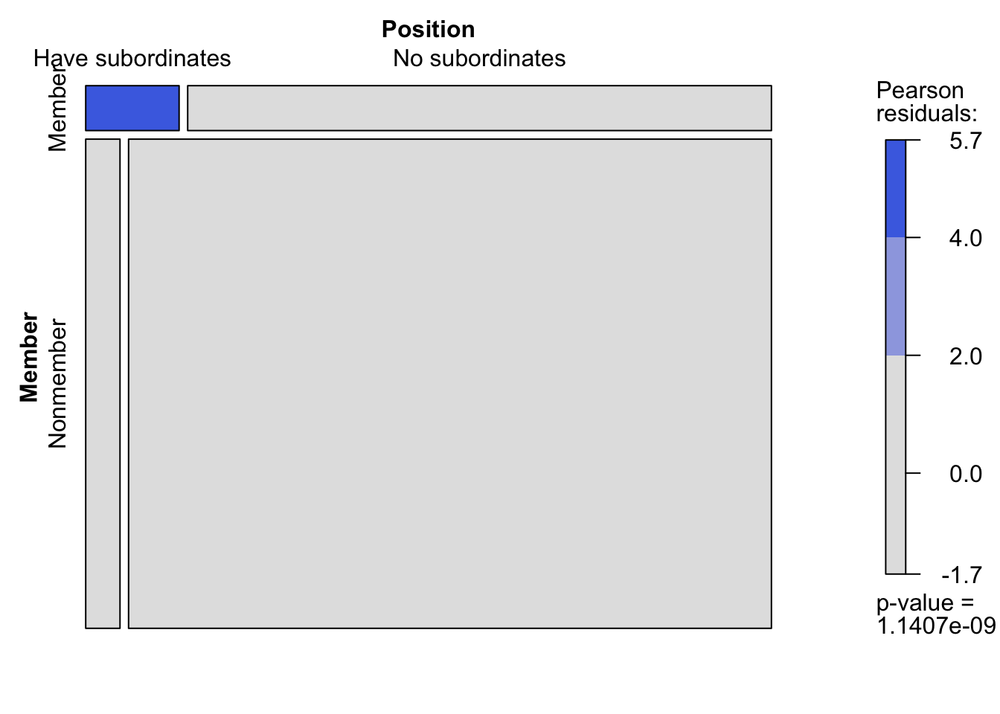

library(tidyverse)
library(magrittr)
library(broom)
library(gnm)
library(vcd)
library(DescTools)
library(logmult)
library(knitr)2 第2章
第2章では2元表の連関モデルが紹介されている．制約のかけかたは少し複雑なのでプログラムとテキストをみながら手順を確認して欲しい．
パッケージはtidyverse（データセットの処理のため），magrittr（パイプ演算子），DescTools（記述統計を求めるため），vcdパッケージ（カテゴリカルデータの分析のため），broom（回帰係数の整理），gnm（連関分析の処理のため），logmult（連関モデルのため）を使用する．
2.1 対比について
回帰モデルにおけるカテゴリカル変数の係数を解釈する上では対比 （contrasts）が重要である．まず，デフォルトでのcontrastsを確認したい．factor変数についてはcontr.treatment，ordered変数についてはcontr.polyという対比が用いられている．contr.treatmentは基準となっている水準とそれぞれの水準を対比する．これはダミーコーディングと呼ばれる． contr.polyは直交多項式（orthogonal polynomials）に基づいた対比を行う（気にしなくてよい）．
# デフォルトのcontrastsを確認
options('contrasts')$contrasts
unordered ordered
"contr.treatment" "contr.poly" # defaultのcontrastsの設定（ここでは特に意味はない．constrastをいじった後にデフォルトに戻す）
options(contrasts = c(factor = "contr.treatment",
ordered = "contr.poly"))具体的に何をしているのかを以下のプログラムで確認する． ダミーコーディングのcontr.treatment以外にも効果コーディングのcontr.sumがある．両者を比較してみたい．
x <- c("A","B","C","D","E")
x[1] "A" "B" "C" "D" "E"# 基準カテゴリが0となるような対比
contr.treatment(x) B C D E
A 0 0 0 0
B 1 0 0 0
C 0 1 0 0
D 0 0 1 0
E 0 0 0 1# 合計が0となるような対比
contr.sum(x) [,1] [,2] [,3] [,4]
A 1 0 0 0
B 0 1 0 0
C 0 0 1 0
D 0 0 0 1
E -1 -1 -1 -1実際に回帰分析を例にcontr.treatmentとcontr.sumの違いを確認する．データはmpg（Fuel economy data from 1999 to 2008 for 38 popular models of cars）である．従属変数はhwy（highway miles per gallon）であり，独立変数はclass（“type” of car）とする．
mpg %>% count(class)# A tibble: 7 × 2
class n
<chr> <int>
1 2seater 5
2 compact 47
3 midsize 41
4 minivan 11
5 pickup 33
6 subcompact 35
7 suv 62mpg %>%
group_by(class) %>%
dplyr::summarise(n = n(),
Mean = mean(hwy, na.rm = TRUE))# A tibble: 7 × 3
class n Mean
<chr> <int> <dbl>
1 2seater 5 24.8
2 compact 47 28.3
3 midsize 41 27.3
4 minivan 11 22.4
5 pickup 33 16.9
6 subcompact 35 28.1
7 suv 62 18.1まずダミーコーディング（dummy coding）の結果を確認する．
# 回帰分析の例（contr.treatmentを使用）
options(contrasts = c(factor = "contr.treatment",
ordered = "contr.poly"))
fit_ct <- lm(hwy ~ class, data = mpg)
summary(fit_ct)
Call:
lm(formula = hwy ~ class, data = mpg)
Residuals:
Min 1Q Median 3Q Max
-8.1429 -1.8788 -0.2927 1.1803 15.8571
Coefficients:
Estimate Std. Error t value Pr(>|t|)
(Intercept) 24.800 1.507 16.454 < 2e-16 ***
classcompact 3.498 1.585 2.206 0.0284 *
classmidsize 2.493 1.596 1.561 0.1198
classminivan -2.436 1.818 -1.340 0.1815
classpickup -7.921 1.617 -4.898 1.84e-06 ***
classsubcompact 3.343 1.611 2.075 0.0391 *
classsuv -6.671 1.567 -4.258 3.03e-05 ***
---
Signif. codes: 0 '***' 0.001 '**' 0.01 '*' 0.05 '.' 0.1 ' ' 1
Residual standard error: 3.37 on 227 degrees of freedom
Multiple R-squared: 0.6879, Adjusted R-squared: 0.6797
F-statistic: 83.39 on 6 and 227 DF, p-value: < 2.2e-16model.matrix(fit_ct) %>% unique() (Intercept) classcompact classmidsize classminivan classpickup
1 1 1 0 0 0
16 1 0 1 0 0
19 1 0 0 0 0
24 1 0 0 0 0
38 1 0 0 1 0
49 1 0 0 0 1
91 1 0 0 0 0
classsubcompact classsuv
1 0 0
16 0 0
19 0 1
24 0 0
38 0 0
49 0 0
91 1 0出力される係数は6つである．classはfactorによって水準が設定されているわけではないので，2seaterが基準カテゴリとなっており，出力からは省略されている．つまり，2seaterの係数は0であり，(Intercept)の値は2seaterの平均値を示している．
次に効果コーディングの結果を確認する．
# 回帰分析の例（contr.sumを使用）
options(contrasts = c(factor = "contr.sum",
ordered = "contr.poly"))
fit_cs <- lm(hwy ~ class, data = mpg)
summary(fit_cs)
Call:
lm(formula = hwy ~ class, data = mpg)
Residuals:
Min 1Q Median 3Q Max
-8.1429 -1.8788 -0.2927 1.1803 15.8571
Coefficients:
Estimate Std. Error t value Pr(>|t|)
(Intercept) 23.7007 0.3089 76.730 < 2e-16 ***
class1 1.0993 1.3108 0.839 0.403
class2 4.5972 0.5177 8.880 < 2e-16 ***
class3 3.5920 0.5416 6.633 2.39e-10 ***
class4 -1.3371 0.9127 -1.465 0.144
class5 -6.8219 0.5842 -11.678 < 2e-16 ***
class6 4.4422 0.5720 7.766 2.77e-13 ***
---
Signif. codes: 0 '***' 0.001 '**' 0.01 '*' 0.05 '.' 0.1 ' ' 1
Residual standard error: 3.37 on 227 degrees of freedom
Multiple R-squared: 0.6879, Adjusted R-squared: 0.6797
F-statistic: 83.39 on 6 and 227 DF, p-value: < 2.2e-16model.matrix(fit_cs) %>% unique() (Intercept) class1 class2 class3 class4 class5 class6
1 1 0 1 0 0 0 0
16 1 0 0 1 0 0 0
19 1 -1 -1 -1 -1 -1 -1
24 1 1 0 0 0 0 0
38 1 0 0 0 1 0 0
49 1 0 0 0 0 1 0
91 1 0 0 0 0 0 1ここでも出力される係数は6つであるが，ここでは最後のカテゴリが省略されている．しかし，最後のカテゴリであるclasssuvの係数は0ではない．すべての係数の和が0になるという制約を与えているので，classsuvの係数は他の係数の値の和を0から引いたものとなる．
# classという文字が含まれる係数を取り出し，係数の番号を調べる（2から7）
pickCoef(fit_cs, "class")class1 class2 class3 class4 class5 class6
2 3 4 5 6 7 # 係数の2から7までを取り出し，その和を求める．
fit_cs$coefficients[2:7] %>% sum()[1] 5.571663# 和を0から引く
0 - (fit_cs$coefficients[2:7] %>% sum())[1] -5.571663したがって，classsuvの係数は-5.571663となる．
contrastsの設定を変更して分析を終えたら必ずもとに戻しておく．
# デフォルトに戻す
options(contrasts = c(factor = "contr.treatment", ordered = "contr.poly"))lmではモデルの中でcontrastsを指定することもできる．
fit_cs2 <- lm(hwy ~ class, data = mpg)
summary(fit_cs2)
Call:
lm(formula = hwy ~ class, data = mpg)
Residuals:
Min 1Q Median 3Q Max
-8.1429 -1.8788 -0.2927 1.1803 15.8571
Coefficients:
Estimate Std. Error t value Pr(>|t|)
(Intercept) 24.800 1.507 16.454 < 2e-16 ***
classcompact 3.498 1.585 2.206 0.0284 *
classmidsize 2.493 1.596 1.561 0.1198
classminivan -2.436 1.818 -1.340 0.1815
classpickup -7.921 1.617 -4.898 1.84e-06 ***
classsubcompact 3.343 1.611 2.075 0.0391 *
classsuv -6.671 1.567 -4.258 3.03e-05 ***
---
Signif. codes: 0 '***' 0.001 '**' 0.01 '*' 0.05 '.' 0.1 ' ' 1
Residual standard error: 3.37 on 227 degrees of freedom
Multiple R-squared: 0.6879, Adjusted R-squared: 0.6797
F-statistic: 83.39 on 6 and 227 DF, p-value: < 2.2e-16fit_cs2 <- lm(hwy ~ class, data = mpg,
contrasts = list(class = "contr.sum"))
summary(fit_cs2)
Call:
lm(formula = hwy ~ class, data = mpg, contrasts = list(class = "contr.sum"))
Residuals:
Min 1Q Median 3Q Max
-8.1429 -1.8788 -0.2927 1.1803 15.8571
Coefficients:
Estimate Std. Error t value Pr(>|t|)
(Intercept) 23.7007 0.3089 76.730 < 2e-16 ***
class1 1.0993 1.3108 0.839 0.403
class2 4.5972 0.5177 8.880 < 2e-16 ***
class3 3.5920 0.5416 6.633 2.39e-10 ***
class4 -1.3371 0.9127 -1.465 0.144
class5 -6.8219 0.5842 -11.678 < 2e-16 ***
class6 4.4422 0.5720 7.766 2.77e-13 ***
---
Signif. codes: 0 '***' 0.001 '**' 0.01 '*' 0.05 '.' 0.1 ' ' 1
Residual standard error: 3.37 on 227 degrees of freedom
Multiple R-squared: 0.6879, Adjusted R-squared: 0.6797
F-statistic: 83.39 on 6 and 227 DF, p-value: < 2.2e-162.2 表2.1 (p.8)
- p.8の表2.1を再現する．
- クロス表に周辺度数を追加する場合は，
addmarginsを用いる．
# 度数
Freq <- c( 40, 250,
160,3000)
Freq[1] 40 250 160 3000ベクトルを表にする．ここではas.tableでクラスをtableとしている．
# 行列を作成し，表とする．
tab_2.1 <- matrix(
Freq,
nrow = 2,
ncol = 2,
byrow = TRUE,
dimnames = c(list(
Member = c("Member", "Nonmember"),
Position = c("Have subordinates",
"No subordinates")
))
) %>% as.table()周辺分布とモザイクプロットも確認する．
Margins(tab_2.1)$Member
level freq perc cumfreq cumperc
1 Member 290 8.4% 290 8.4%
2 Nonmember 3'160 91.6% 3'450 100.0%
$Position
level freq perc cumfreq cumperc
1 Have subordinates 200 5.8% 200 5.8%
2 No subordinates 3'250 94.2% 3'450 100.0%mosaic(tab_2.1, shade = TRUE, keep_aspect_ratio = FALSE)
# A. 度数（周辺度数の追加）
tab_2.1 %>% addmargins() Position
Member Have subordinates No subordinates Sum
Member 40 250 290
Nonmember 160 3000 3160
Sum 200 3250 3450表の数字を用いてオッズ比を計算する．
# B. Odds
40/250[1] 0.16160/3000[1] 0.05333333# C. Odds ratio
(40 * 3000) / (250 * 160)[1] 3DescToolsパッケージのOddsRatio関数を用いてオッズ比を求める．conf.level = 0.95とすることで信頼区間を求めることもできる．
OddsRatio(tab_2.1, conf.level = 0.95)odds ratio lwr.ci upr.ci
3.000000 2.072786 4.341982 さらに詳細な結果をみたければDescToolsパッケージのDescを用いる．
Desc(tab_2.1)------------------------------------------------------------------------------
tab_2.1 (table)
Summary:
n: 3'450, rows: 2, columns: 2
Pearson's Chi-squared test (cont. adj):
X-squared = 35.487, df = 1, p-value = 2.568e-09
Fisher's exact test p-value = 9.541e-08
McNemar's chi-squared = 19.32, df = 1, p-value = 1.106e-05
estimate lwr.ci upr.ci'
odds ratio 3.000 2.073 4.342
rel. risk (col1) 2.724 1.968 3.770
rel. risk (col2) 0.908 0.867 0.951
Contingency Coeff. 0.103
Cramer's V 0.104
Kendall Tau-b 0.104
Position Have subordinates No subordinates Sum
Member
Member freq 40 250 290
perc 1.2% 7.2% 8.4%
p.row 13.8% 86.2% .
p.col 20.0% 7.7% .
Nonmember freq 160 3'000 3'160
perc 4.6% 87.0% 91.6%
p.row 5.1% 94.9% .
p.col 80.0% 92.3% .
Sum freq 200 3'250 3'450
perc 5.8% 94.2% 100.0%
p.row . . .
p.col . . .
----------
' 95% conf. level
- 次にセルの組み合わせを単位とした集計データを作成し，
gnmを適用することでオッズ比を求めてみたい．
# 度数のベクトル
Freq[1] 40 250 160 3000# 行変数
COMM <- gl(n = 2, k = 2)
COMM[1] 1 1 2 2
Levels: 1 2# 列変数
SUP <- gl(n = 2, k = 1, length = 4)
SUP[1] 1 2 1 2
Levels: 1 2# 度数，行変数，列変数からなるデータを作成
freq_tab_2.1 <- tibble(Freq, COMM, SUP)
# データの確認
freq_tab_2.1# A tibble: 4 × 3
Freq COMM SUP
<dbl> <fct> <fct>
1 40 1 1
2 250 1 2
3 160 2 1
4 3000 2 2 分析には通常はglmを用いるが，後の分析とあわせてgnmによって推定する．結果は異ならない．family = poissonという指定を忘れないようにすること．
# gnmで推定
fit <- freq_tab_2.1 %>%
gnm(Freq ~ COMM + SUP + COMM*SUP, data = ., family = poisson)
summary(fit)
Call:
gnm(formula = Freq ~ COMM + SUP + COMM * SUP, family = poisson,
data = .)
Deviance Residuals:
[1] 0 0 0 0
Coefficients:
Estimate Std. Error z value Pr(>|z|)
(Intercept) 3.6889 0.1581 23.331 < 2e-16 ***
COMM2 1.3863 0.1768 7.842 < 2e-16 ***
SUP2 1.8326 0.1703 10.761 < 2e-16 ***
COMM2:SUP2 1.0986 0.1886 5.824 5.75e-09 ***
---
Signif. codes: 0 '***' 0.001 '**' 0.01 '*' 0.05 '.' 0.1 ' ' 1
(Dispersion parameter for poisson family taken to be 1)
Residual deviance: -5.3113e-13 on 0 degrees of freedom
AIC: 37.649
Number of iterations: 2COMM2:SUP2の係数は1.0986である．これは対数オッズなので，指数関数expを適用してオッズ比を求める．
# Odds ratios fit$coefficientsのCOMM2:SUP2の要素のみを取り出し，指数関数expを適用
fit$coefficients["COMM2:SUP2"] %>% exp()COMM2:SUP2
3 2.3 表2.3A (p.32)
まずは表2.3Aを作成する．値をベクトルの形で入力する．
Freq <- c( 39, 50, 18, 4,
140,178, 85, 23,
108,195, 97, 23,
238,598,363,111,
78,250,150, 55,
50,200,208, 74,
8, 29, 46, 21)ベクトルのデータをmatrixで行列にし，最終的にはas.tableでtable形式にする．
# データを表形式に変換
tab_2.3A <- matrix(
Freq,
nrow = 7,
ncol = 4,
byrow = TRUE,
dimnames = c(list(
polviews = c(
"Strongly liberal",
"Liberal",
"Slightly liberal",
"Moderate",
"Slightly conservative",
"Conservative",
"Strongly conservative"),
fefam = c("Strongly Disagree",
"Disagree",
"Agree",
"Strongly agree")
))) %>% as.table()
tab_2.3A fefam
polviews Strongly Disagree Disagree Agree Strongly agree
Strongly liberal 39 50 18 4
Liberal 140 178 85 23
Slightly liberal 108 195 97 23
Moderate 238 598 363 111
Slightly conservative 78 250 150 55
Conservative 50 200 208 74
Strongly conservative 8 29 46 21# 度数，行変数，列変数からなる集計データを作成
polviews <- gl(n = 7, k = 4)
fefam <- gl(n = 4, k = 1, length = 28)
freq_tab_2.3A <- tibble(Freq, polviews, fefam)
freq_tab_2.3A# A tibble: 28 × 3
Freq polviews fefam
<dbl> <fct> <fct>
1 39 1 1
2 50 1 2
3 18 1 3
4 4 1 4
5 140 2 1
6 178 2 2
7 85 2 3
8 23 2 4
9 108 3 1
10 195 3 2
# ℹ 18 more rows- なお
tab_2.3Aに対して，data.frameを適用しても集計データは作成される．tableの行変数と列変数が指定されていないと，行変数はVar1，列変数はVar2となるので，必要に応じて名前をrenameで修正する ．
data.frame(tab_2.3A) %>%
tibble()# A tibble: 28 × 3
polviews fefam Freq
<fct> <fct> <dbl>
1 Strongly liberal Strongly Disagree 39
2 Liberal Strongly Disagree 140
3 Slightly liberal Strongly Disagree 108
4 Moderate Strongly Disagree 238
5 Slightly conservative Strongly Disagree 78
6 Conservative Strongly Disagree 50
7 Strongly conservative Strongly Disagree 8
8 Strongly liberal Disagree 50
9 Liberal Disagree 178
10 Slightly liberal Disagree 195
# ℹ 18 more rows以下では複数のモデルの適合度を比較する．そこで，モデル適合度を表示するための関数を作成する．モデルはすべてgnmによって推定されることを前提としている．glmの場合はエラーが出るので注意すること．
# 引数となるobjはgnmの結果
model.summary <- function(obj, Model = NULL){
if (sum(class(obj) == "gnm") != 1)
stop("estimate with gnm")
aic <- obj$deviance - obj$df * 2 # AIC(L2)
bic <- obj$deviance - obj$df * log(sum(obj$y)) #BIC(L2)
delta <- 100 * sum(abs(obj$y - obj$fitted.values)) / (2 * sum(obj$y))
p <- pchisq(obj$deviance, obj$df, lower.tail = FALSE) #p<-ifelse(p<0.001,"<0.001",p)
result <- matrix(0, 1, 7)
if (is.null(Model)){
Model <- deparse(substitute(obj))
}
result <- tibble(
"Model Description" = Model,
"df" = obj$df,
"L2" = obj$deviance,
#"AIC(L2)" = aic,
"BIC" = bic,
"Delta" = delta,
"p" = p
)
return(result)
}コントラストがデフォルトのfactor = "contr.treatment"とordered = "contr.poly"になっているのかを確認する．
# デフォルトのcontrasts
options('contrasts')$contrasts
factor ordered
"contr.treatment" "contr.poly" # defaultのcontrastsの設定（ここでは特に意味はない．constrastをいじった後にデフォルトに戻す）
options(contrasts = c(factor = "contr.treatment",
ordered = "contr.poly"))行スコアと列スコアを用いるので，まずas.integerを用いて行スコア（Rscore）と列スコア（Cscore）の変数を作成する．
# 行変数と列変数の整数値を作成
freq_tab_2.3A <- freq_tab_2.3A %>%
mutate(Rscore = as.integer(polviews),
Cscore = as.integer(fefam))
freq_tab_2.3A# A tibble: 28 × 5
Freq polviews fefam Rscore Cscore
<dbl> <fct> <fct> <int> <int>
1 39 1 1 1 1
2 50 1 2 1 2
3 18 1 3 1 3
4 4 1 4 1 4
5 140 2 1 2 1
6 178 2 2 2 2
7 85 2 3 2 3
8 23 2 4 2 4
9 108 3 1 3 1
10 195 3 2 3 2
# ℹ 18 more rows2.3.1 独立モデル
独立モデルは次のようになる．
# 1. O: Independence/Null Association Model
O <- freq_tab_2.3A %>%
gnm(Freq ~ polviews + fefam,
family = poisson,
data = .,
tolerance = 1e-12
)
# 結果
summary(O)
Call:
gnm(formula = Freq ~ polviews + fefam, family = poisson, data = .,
tolerance = 1e-12)
Deviance Residuals:
Min 1Q Median 3Q Max
-5.7415 -2.5344 -0.4283 1.5557 5.8265
Coefficients:
Estimate Std. Error z value Pr(>|z|)
(Intercept) 3.06035 0.10115 30.256 < 2e-16 ***
polviews2 1.34491 0.10657 12.620 < 2e-16 ***
polviews3 1.33784 0.10664 12.545 < 2e-16 ***
polviews4 2.46825 0.09886 24.968 < 2e-16 ***
polviews5 1.56899 0.10433 15.038 < 2e-16 ***
polviews6 1.56711 0.10435 15.018 < 2e-16 ***
polviews7 -0.06514 0.13647 -0.477 0.633
fefam2 0.81947 0.04669 17.553 < 2e-16 ***
fefam3 0.38044 0.05047 7.538 4.76e-14 ***
fefam4 -0.75396 0.06876 -10.965 < 2e-16 ***
---
Signif. codes: 0 '***' 0.001 '**' 0.01 '*' 0.05 '.' 0.1 ' ' 1
(Dispersion parameter for poisson family taken to be 1)
Residual deviance: 211.7 on 18 degrees of freedom
AIC: 403.05
Number of iterations: 5先ほど作成した適合度の関数を用いる．2つめの引数はモデルの名前の詳細を記述可能だが，これは省略してもよい．
# モデル適合度
model.summary(O, "O:Independent")# A tibble: 1 × 6
`Model Description` df L2 BIC Delta p
<chr> <int> <dbl> <dbl> <dbl> <dbl>
1 O:Independent 18 212. 65.1 8.09 4.54e-35テキストの表2.4と同じ結果になっているのかを確認してみる．
2.3.2 一様連関モデル
一様連関モデルでは先ほど作成した行変数と列変数の整数スコアの積であるRscore:Cscoreを加える．Rscore*CscoreあるいはI(Rscore*Cscore)でもよい．
# 2. U: Uniform Association Model
U <- freq_tab_2.3A %>%
gnm(Freq ~ polviews + fefam + Rscore:Cscore,
family = poisson,
data = .,
tolerance = 1e-12)# 結果
summary(U)
Call:
gnm(formula = Freq ~ polviews + fefam + Rscore:Cscore, family = poisson,
data = ., tolerance = 1e-12)
Deviance Residuals:
Min 1Q Median 3Q Max
-1.62563 -0.41050 -0.06989 0.53746 1.67998
Coefficients:
Estimate Std. Error z value Pr(>|z|)
(Intercept) 3.47979 0.10109 34.422 < 2e-16 ***
polviews2 0.95906 0.10934 8.771 < 2e-16 ***
polviews3 0.53993 0.11884 4.543 5.54e-06 ***
polviews4 1.23013 0.12993 9.468 < 2e-16 ***
polviews5 -0.13911 0.15936 -0.873 0.382733
polviews6 -0.64184 0.19196 -3.344 0.000827 ***
polviews7 -2.80636 0.24740 -11.344 < 2e-16 ***
fefam2 0.05148 0.07139 0.721 0.470857
fefam3 -1.23188 0.12922 -9.533 < 2e-16 ***
fefam4 -3.28436 0.20609 -15.936 < 2e-16 ***
Rscore:Cscore 0.20211 0.01520 13.299 < 2e-16 ***
---
Signif. codes: 0 '***' 0.001 '**' 0.01 '*' 0.05 '.' 0.1 ' ' 1
(Dispersion parameter for poisson family taken to be 1)
Residual deviance: 20.125 on 17 degrees of freedom
AIC: 213.48
Number of iterations: 4表2.4Aと同じ結果になっているのかを確認する．
# モデル適合度
model.summary(U, "U:Uniform")# A tibble: 1 × 6
`Model Description` df L2 BIC Delta p
<chr> <int> <dbl> <dbl> <dbl> <dbl>
1 U:Uniform 17 20.1 -118. 2.77 0.268モデル行列を確認するのもよいだろう．
# model.matrixを適用し，ユニークな値だけを表示
model.matrix(U) %>% unique() (Intercept) polviews2 polviews3 polviews4 polviews5 polviews6 polviews7
1 1 0 0 0 0 0 0
2 1 0 0 0 0 0 0
3 1 0 0 0 0 0 0
4 1 0 0 0 0 0 0
5 1 1 0 0 0 0 0
6 1 1 0 0 0 0 0
7 1 1 0 0 0 0 0
8 1 1 0 0 0 0 0
9 1 0 1 0 0 0 0
10 1 0 1 0 0 0 0
11 1 0 1 0 0 0 0
12 1 0 1 0 0 0 0
13 1 0 0 1 0 0 0
14 1 0 0 1 0 0 0
15 1 0 0 1 0 0 0
16 1 0 0 1 0 0 0
17 1 0 0 0 1 0 0
18 1 0 0 0 1 0 0
19 1 0 0 0 1 0 0
20 1 0 0 0 1 0 0
21 1 0 0 0 0 1 0
22 1 0 0 0 0 1 0
23 1 0 0 0 0 1 0
24 1 0 0 0 0 1 0
25 1 0 0 0 0 0 1
26 1 0 0 0 0 0 1
27 1 0 0 0 0 0 1
28 1 0 0 0 0 0 1
fefam2 fefam3 fefam4 Rscore:Cscore
1 0 0 0 1
2 1 0 0 2
3 0 1 0 3
4 0 0 1 4
5 0 0 0 2
6 1 0 0 4
7 0 1 0 6
8 0 0 1 8
9 0 0 0 3
10 1 0 0 6
11 0 1 0 9
12 0 0 1 12
13 0 0 0 4
14 1 0 0 8
15 0 1 0 12
16 0 0 1 16
17 0 0 0 5
18 1 0 0 10
19 0 1 0 15
20 0 0 1 20
21 0 0 0 6
22 1 0 0 12
23 0 1 0 18
24 0 0 1 24
25 0 0 0 7
26 1 0 0 14
27 0 1 0 21
28 0 0 1 282.3.3 行効果モデル
contrastを修正し，polviewsの係数のすべてを足すと0になるように効果コーディングを行ってる．なお行変数と列スコアの積についてはCscore*polviewsとし，Cscore:polviewsとしない．
# 3. R: Row Effect Model
# contrastを修正している．
options(contrasts = c(factor = "contr.sum",
ordered = "contr.treatment"))
options('contrasts')$contrasts
factor ordered
"contr.sum" "contr.treatment" R <- freq_tab_2.3A %>%
gnm(Freq ~ polviews + fefam + Cscore*polviews,
family = poisson,
data = .,
tolerance = 1e-12)
# 結果
summary(R)
Call:
gnm(formula = Freq ~ polviews + fefam + Cscore * polviews, family = poisson,
data = ., tolerance = 1e-12)
Deviance Residuals:
Min 1Q Median 3Q Max
-1.5962 -0.4603 0.0477 0.3840 1.5700
Coefficients:
Estimate Std. Error z value Pr(>|z|)
(Intercept) 4.262045 0.029618 143.902 < 2e-16 ***
polviews1 0.040378 0.222896 0.181 0.8562
polviews2 1.088684 0.130977 8.312 < 2e-16 ***
polviews3 0.763635 0.132427 5.766 8.09e-09 ***
polviews4 1.335170 0.096565 13.827 < 2e-16 ***
polviews5 0.197587 0.127059 1.555 0.1199
polviews6 -0.558409 0.134998 -4.136 3.53e-05 ***
fefam1 -0.112887 0.046238 -2.441 0.0146 *
fefam2 0.758505 0.030086 25.211 < 2e-16 ***
fefam3 0.295555 0.032630 9.058 < 2e-16 ***
Cscore 0.000000 NA NA NA
polviews1:Cscore -0.558727 0.107668 -5.189 2.11e-07 ***
polviews2:Cscore -0.405076 0.059149 -6.848 7.47e-12 ***
polviews3:Cscore -0.248459 0.057741 -4.303 1.69e-05 ***
polviews4:Cscore 0.008764 0.039709 0.221 0.8253
polviews5:Cscore 0.112245 0.051284 2.189 0.0286 *
polviews6:Cscore 0.419079 0.051434 8.148 < 2e-16 ***
---
Signif. codes: 0 '***' 0.001 '**' 0.01 '*' 0.05 '.' 0.1 ' ' 1
(Dispersion parameter for poisson family taken to be 1)
Std. Error is NA where coefficient has been constrained or is unidentified
Residual deviance: 15.906 on 12 degrees of freedom
AIC: 219.26
Number of iterations: 4# モデル適合度
model.summary(R, "R:Row effect")# A tibble: 1 × 6
`Model Description` df L2 BIC Delta p
<chr> <int> <dbl> <dbl> <dbl> <dbl>
1 R:Row effect 12 15.9 -81.8 2.47 0.196# モデル行列の確認
model.matrix(R) %>% unique() (Intercept) polviews1 polviews2 polviews3 polviews4 polviews5 polviews6
1 1 1 0 0 0 0 0
2 1 1 0 0 0 0 0
3 1 1 0 0 0 0 0
4 1 1 0 0 0 0 0
5 1 0 1 0 0 0 0
6 1 0 1 0 0 0 0
7 1 0 1 0 0 0 0
8 1 0 1 0 0 0 0
9 1 0 0 1 0 0 0
10 1 0 0 1 0 0 0
11 1 0 0 1 0 0 0
12 1 0 0 1 0 0 0
13 1 0 0 0 1 0 0
14 1 0 0 0 1 0 0
15 1 0 0 0 1 0 0
16 1 0 0 0 1 0 0
17 1 0 0 0 0 1 0
18 1 0 0 0 0 1 0
19 1 0 0 0 0 1 0
20 1 0 0 0 0 1 0
21 1 0 0 0 0 0 1
22 1 0 0 0 0 0 1
23 1 0 0 0 0 0 1
24 1 0 0 0 0 0 1
25 1 -1 -1 -1 -1 -1 -1
26 1 -1 -1 -1 -1 -1 -1
27 1 -1 -1 -1 -1 -1 -1
28 1 -1 -1 -1 -1 -1 -1
fefam1 fefam2 fefam3 Cscore polviews1:Cscore polviews2:Cscore
1 1 0 0 1 1 0
2 0 1 0 2 2 0
3 0 0 1 3 3 0
4 -1 -1 -1 4 4 0
5 1 0 0 1 0 1
6 0 1 0 2 0 2
7 0 0 1 3 0 3
8 -1 -1 -1 4 0 4
9 1 0 0 1 0 0
10 0 1 0 2 0 0
11 0 0 1 3 0 0
12 -1 -1 -1 4 0 0
13 1 0 0 1 0 0
14 0 1 0 2 0 0
15 0 0 1 3 0 0
16 -1 -1 -1 4 0 0
17 1 0 0 1 0 0
18 0 1 0 2 0 0
19 0 0 1 3 0 0
20 -1 -1 -1 4 0 0
21 1 0 0 1 0 0
22 0 1 0 2 0 0
23 0 0 1 3 0 0
24 -1 -1 -1 4 0 0
25 1 0 0 1 -1 -1
26 0 1 0 2 -2 -2
27 0 0 1 3 -3 -3
28 -1 -1 -1 4 -4 -4
polviews3:Cscore polviews4:Cscore polviews5:Cscore polviews6:Cscore
1 0 0 0 0
2 0 0 0 0
3 0 0 0 0
4 0 0 0 0
5 0 0 0 0
6 0 0 0 0
7 0 0 0 0
8 0 0 0 0
9 1 0 0 0
10 2 0 0 0
11 3 0 0 0
12 4 0 0 0
13 0 1 0 0
14 0 2 0 0
15 0 3 0 0
16 0 4 0 0
17 0 0 1 0
18 0 0 2 0
19 0 0 3 0
20 0 0 4 0
21 0 0 0 1
22 0 0 0 2
23 0 0 0 3
24 0 0 0 4
25 -1 -1 -1 -1
26 -2 -2 -2 -2
27 -3 -3 -3 -3
28 -4 -4 -4 -4表2.4の適合度を確認しよう．また，パラメータ推定値については，表2.5のBから確認する． Rの結果では，polviews1からpolviews6までの結果が表示されているが，polviews7は示されていない．パラメータのすべての値を足すと0となることから(\(\sum \tau_i^A=0\))，polviews7の係数は0-(-0.6721737)=0.6721737となる．これをRで計算するためには係数を取り出し，それらを足したものを0から引けばよい．
# R
# 取り出す係数を探す
pickCoef(R, ":Cscore")polviews1:Cscore polviews2:Cscore polviews3:Cscore polviews4:Cscore
12 13 14 15
polviews5:Cscore polviews6:Cscore
16 17 # 12から17番目の係数を取り出し，足す
R$coefficients[12:17] %>% sum()[1] -0.6721737# 0から足したものを引く
0 - (R$coefficients[12:17] %>% sum())[1] 0.6721737contrastsをもとに戻して同様の分析を行う． 今度はpolviews1:Cscoreの係数が省略されているが，この値は0である（\(\tau_1^A=0\)）．
# alternative (default)
options(contrasts = c(factor = "contr.treatment",
ordered = "contr.poly"))
Ralt <- freq_tab_2.3A %>%
gnm(Freq ~ polviews + fefam + Cscore*polviews,
family = poisson,
data = .,
tolerance = 1e-12)結果は表2.5Bの「他の正規化」の行を確認して欲しい．
# 結果
summary(Ralt)
Call:
gnm(formula = Freq ~ polviews + fefam + Cscore * polviews, family = poisson,
data = ., tolerance = 1e-12)
Deviance Residuals:
Min 1Q Median 3Q Max
-1.5962 -0.4603 0.0477 0.3840 1.5700
Coefficients:
Estimate Std. Error z value Pr(>|z|)
(Intercept) 3.6308 0.1443 25.160 < 2e-16 ***
polviews2 1.0483 0.2801 3.742 0.000182 ***
polviews3 0.7233 0.2818 2.567 0.010258 *
polviews4 1.2948 0.2617 4.947 7.52e-07 ***
polviews5 0.1572 0.2798 0.562 0.574154
polviews6 -0.5988 0.2859 -2.094 0.036244 *
polviews7 -2.9074 0.4145 -7.015 2.30e-12 ***
fefam2 0.3127 0.1265 2.471 0.013455 *
fefam3 -0.7090 0.2447 -2.897 0.003763 **
fefam4 -2.5045 0.3703 -6.763 1.36e-11 ***
Cscore 0.0000 NA NA NA
polviews2:Cscore 0.1537 0.1362 1.128 0.259246
polviews3:Cscore 0.3103 0.1357 2.287 0.022191 *
polviews4:Cscore 0.5675 0.1268 4.477 7.58e-06 ***
polviews5:Cscore 0.6710 0.1326 5.059 4.21e-07 ***
polviews6:Cscore 0.9778 0.1331 7.346 2.04e-13 ***
polviews7:Cscore 1.2309 0.1678 7.335 2.22e-13 ***
---
Signif. codes: 0 '***' 0.001 '**' 0.01 '*' 0.05 '.' 0.1 ' ' 1
(Dispersion parameter for poisson family taken to be 1)
Std. Error is NA where coefficient has been constrained or is unidentified
Residual deviance: 15.906 on 12 degrees of freedom
AIC: 219.26
Number of iterations: 4モデルの適合度は全く同じであることがわかる．
# モデル適合度
model.summary(R, "R: Row effect (effect coding)")# A tibble: 1 × 6
`Model Description` df L2 BIC Delta p
<chr> <int> <dbl> <dbl> <dbl> <dbl>
1 R: Row effect (effect coding) 12 15.9 -81.8 2.47 0.196model.summary(Ralt, "R: Row effect (dummy coding)")# A tibble: 1 × 6
`Model Description` df L2 BIC Delta p
<chr> <int> <dbl> <dbl> <dbl> <dbl>
1 R: Row effect (dummy coding) 12 15.9 -81.8 2.47 0.196# モデル行列の確認
model.matrix(Ralt) %>% unique() (Intercept) polviews2 polviews3 polviews4 polviews5 polviews6 polviews7
1 1 0 0 0 0 0 0
2 1 0 0 0 0 0 0
3 1 0 0 0 0 0 0
4 1 0 0 0 0 0 0
5 1 1 0 0 0 0 0
6 1 1 0 0 0 0 0
7 1 1 0 0 0 0 0
8 1 1 0 0 0 0 0
9 1 0 1 0 0 0 0
10 1 0 1 0 0 0 0
11 1 0 1 0 0 0 0
12 1 0 1 0 0 0 0
13 1 0 0 1 0 0 0
14 1 0 0 1 0 0 0
15 1 0 0 1 0 0 0
16 1 0 0 1 0 0 0
17 1 0 0 0 1 0 0
18 1 0 0 0 1 0 0
19 1 0 0 0 1 0 0
20 1 0 0 0 1 0 0
21 1 0 0 0 0 1 0
22 1 0 0 0 0 1 0
23 1 0 0 0 0 1 0
24 1 0 0 0 0 1 0
25 1 0 0 0 0 0 1
26 1 0 0 0 0 0 1
27 1 0 0 0 0 0 1
28 1 0 0 0 0 0 1
fefam2 fefam3 fefam4 Cscore polviews2:Cscore polviews3:Cscore
1 0 0 0 1 0 0
2 1 0 0 2 0 0
3 0 1 0 3 0 0
4 0 0 1 4 0 0
5 0 0 0 1 1 0
6 1 0 0 2 2 0
7 0 1 0 3 3 0
8 0 0 1 4 4 0
9 0 0 0 1 0 1
10 1 0 0 2 0 2
11 0 1 0 3 0 3
12 0 0 1 4 0 4
13 0 0 0 1 0 0
14 1 0 0 2 0 0
15 0 1 0 3 0 0
16 0 0 1 4 0 0
17 0 0 0 1 0 0
18 1 0 0 2 0 0
19 0 1 0 3 0 0
20 0 0 1 4 0 0
21 0 0 0 1 0 0
22 1 0 0 2 0 0
23 0 1 0 3 0 0
24 0 0 1 4 0 0
25 0 0 0 1 0 0
26 1 0 0 2 0 0
27 0 1 0 3 0 0
28 0 0 1 4 0 0
polviews4:Cscore polviews5:Cscore polviews6:Cscore polviews7:Cscore
1 0 0 0 0
2 0 0 0 0
3 0 0 0 0
4 0 0 0 0
5 0 0 0 0
6 0 0 0 0
7 0 0 0 0
8 0 0 0 0
9 0 0 0 0
10 0 0 0 0
11 0 0 0 0
12 0 0 0 0
13 1 0 0 0
14 2 0 0 0
15 3 0 0 0
16 4 0 0 0
17 0 1 0 0
18 0 2 0 0
19 0 3 0 0
20 0 4 0 0
21 0 0 1 0
22 0 0 2 0
23 0 0 3 0
24 0 0 4 0
25 0 0 0 1
26 0 0 0 2
27 0 0 0 3
28 0 0 0 42.4 列効果モデル
列効果モデルは行効果モデルと同様の方法で推定すればよい．まずは効果コーディングで推定し，その後にダミーコーディングで推定する．
# 4. C: Column Effect Model
# contrast
options(contrasts = c(factor = "contr.sum",
ordered = "contr.treatment"))
C <- freq_tab_2.3A %>%
gnm(Freq ~ polviews + fefam + Rscore*fefam, family = poisson,
data = .,
tolerance = 1e-12)
# 結果
summary(C)
Call:
gnm(formula = Freq ~ polviews + fefam + Rscore * fefam, family = poisson,
data = ., tolerance = 1e-12)
Deviance Residuals:
Min 1Q Median 3Q Max
-1.7572 -0.4920 0.1628 0.4922 1.4247
Coefficients:
Estimate Std. Error z value Pr(>|z|)
(Intercept) 4.26735 0.02842 150.161 < 2e-16 ***
polviews1 -1.34764 0.08885 -15.167 < 2e-16 ***
polviews2 0.10725 0.05058 2.120 0.033978 *
polviews3 0.17817 0.04852 3.672 0.000241 ***
polviews4 1.35465 0.03449 39.280 < 2e-16 ***
polviews5 0.47060 0.04547 10.349 < 2e-16 ***
polviews6 0.45489 0.04714 9.650 < 2e-16 ***
fefam1 1.16938 0.10545 11.089 < 2e-16 ***
fefam2 1.01794 0.08835 11.521 < 2e-16 ***
fefam3 -0.27421 0.10365 -2.646 0.008155 **
Rscore 0.00000 NA NA NA
fefam1:Rscore -0.32183 0.02601 -12.373 < 2e-16 ***
fefam2:Rscore -0.06518 0.02013 -3.238 0.001203 **
fefam3:Rscore 0.13740 0.02282 6.021 1.73e-09 ***
---
Signif. codes: 0 '***' 0.001 '**' 0.01 '*' 0.05 '.' 0.1 ' ' 1
(Dispersion parameter for poisson family taken to be 1)
Std. Error is NA where coefficient has been constrained or is unidentified
Residual deviance: 14.237 on 15 degrees of freedom
AIC: 211.59
Number of iterations: 4# モデル適合度
model.summary(C, "C:Column effect")# A tibble: 1 × 6
`Model Description` df L2 BIC Delta p
<chr> <int> <dbl> <dbl> <dbl> <dbl>
1 C:Column effect 15 14.2 -108. 2.32 0.508# モデル行列の確認
model.matrix(C) %>% unique() (Intercept) polviews1 polviews2 polviews3 polviews4 polviews5 polviews6
1 1 1 0 0 0 0 0
2 1 1 0 0 0 0 0
3 1 1 0 0 0 0 0
4 1 1 0 0 0 0 0
5 1 0 1 0 0 0 0
6 1 0 1 0 0 0 0
7 1 0 1 0 0 0 0
8 1 0 1 0 0 0 0
9 1 0 0 1 0 0 0
10 1 0 0 1 0 0 0
11 1 0 0 1 0 0 0
12 1 0 0 1 0 0 0
13 1 0 0 0 1 0 0
14 1 0 0 0 1 0 0
15 1 0 0 0 1 0 0
16 1 0 0 0 1 0 0
17 1 0 0 0 0 1 0
18 1 0 0 0 0 1 0
19 1 0 0 0 0 1 0
20 1 0 0 0 0 1 0
21 1 0 0 0 0 0 1
22 1 0 0 0 0 0 1
23 1 0 0 0 0 0 1
24 1 0 0 0 0 0 1
25 1 -1 -1 -1 -1 -1 -1
26 1 -1 -1 -1 -1 -1 -1
27 1 -1 -1 -1 -1 -1 -1
28 1 -1 -1 -1 -1 -1 -1
fefam1 fefam2 fefam3 Rscore fefam1:Rscore fefam2:Rscore fefam3:Rscore
1 1 0 0 1 1 0 0
2 0 1 0 1 0 1 0
3 0 0 1 1 0 0 1
4 -1 -1 -1 1 -1 -1 -1
5 1 0 0 2 2 0 0
6 0 1 0 2 0 2 0
7 0 0 1 2 0 0 2
8 -1 -1 -1 2 -2 -2 -2
9 1 0 0 3 3 0 0
10 0 1 0 3 0 3 0
11 0 0 1 3 0 0 3
12 -1 -1 -1 3 -3 -3 -3
13 1 0 0 4 4 0 0
14 0 1 0 4 0 4 0
15 0 0 1 4 0 0 4
16 -1 -1 -1 4 -4 -4 -4
17 1 0 0 5 5 0 0
18 0 1 0 5 0 5 0
19 0 0 1 5 0 0 5
20 -1 -1 -1 5 -5 -5 -5
21 1 0 0 6 6 0 0
22 0 1 0 6 0 6 0
23 0 0 1 6 0 0 6
24 -1 -1 -1 6 -6 -6 -6
25 1 0 0 7 7 0 0
26 0 1 0 7 0 7 0
27 0 0 1 7 0 0 7
28 -1 -1 -1 7 -7 -7 -7すべてを足すと0となることから(\(\sum \tau_j^B=0\))，polviews7の係数は0-(-0.2496118)=0.2496118となる
pickCoef(C, ":Rscore")fefam1:Rscore fefam2:Rscore fefam3:Rscore
12 13 14 C$coefficients[12:14] %>% sum()[1] -0.24961180 - (C$coefficients[12:14] %>% sum())[1] 0.2496118以下はダミーコーディングを用いている．
# alternative (default)
options(contrasts = c(factor = "contr.treatment",
ordered = "contr.poly"))
Calt <- freq_tab_2.3A %>%
gnm(Freq ~ polviews + fefam + Rscore*fefam,
family = poisson,
data = .,
tolerance = 1e-12)推定値は表2.5Cを確認せよ．
# 結果
summary(Calt)
Call:
gnm(formula = Freq ~ polviews + fefam + Rscore * fefam, family = poisson,
data = ., tolerance = 1e-12)
Deviance Residuals:
Min 1Q Median 3Q Max
-1.7572 -0.4920 0.1628 0.4922 1.4247
Coefficients:
Estimate Std. Error z value Pr(>|z|)
(Intercept) 3.76726 0.11222 33.571 < 2e-16 ***
polviews2 1.13306 0.10785 10.506 < 2e-16 ***
polviews3 0.88215 0.11310 7.800 < 2e-16 ***
polviews4 1.73680 0.11708 14.834 < 2e-16 ***
polviews5 0.53092 0.13848 3.834 0.000126 ***
polviews6 0.19337 0.16048 1.205 0.228239
polviews7 -1.80128 0.20632 -8.730 < 2e-16 ***
fefam2 -0.15144 0.13618 -1.112 0.266095
fefam3 -1.44359 0.15929 -9.063 < 2e-16 ***
fefam4 -3.08249 0.23741 -12.984 < 2e-16 ***
Rscore 0.00000 NA NA NA
fefam2:Rscore 0.25665 0.03459 7.421 1.17e-13 ***
fefam3:Rscore 0.45924 0.03851 11.926 < 2e-16 ***
fefam4:Rscore 0.57144 0.05297 10.788 < 2e-16 ***
---
Signif. codes: 0 '***' 0.001 '**' 0.01 '*' 0.05 '.' 0.1 ' ' 1
(Dispersion parameter for poisson family taken to be 1)
Std. Error is NA where coefficient has been constrained or is unidentified
Residual deviance: 14.237 on 15 degrees of freedom
AIC: 211.59
Number of iterations: 4適合度は効果コーディングとダミーコーディングで変化しない．
# モデル適合度
model.summary(C, "C:Column effect (effect coding)")# A tibble: 1 × 6
`Model Description` df L2 BIC Delta p
<chr> <int> <dbl> <dbl> <dbl> <dbl>
1 C:Column effect (effect coding) 15 14.2 -108. 2.32 0.508model.summary(Calt, "C:Column effect (dummy coding)")# A tibble: 1 × 6
`Model Description` df L2 BIC Delta p
<chr> <int> <dbl> <dbl> <dbl> <dbl>
1 C:Column effect (dummy coding) 15 14.2 -108. 2.32 0.508# モデル行列の確認
model.matrix(Calt) %>% unique() (Intercept) polviews2 polviews3 polviews4 polviews5 polviews6 polviews7
1 1 0 0 0 0 0 0
2 1 0 0 0 0 0 0
3 1 0 0 0 0 0 0
4 1 0 0 0 0 0 0
5 1 1 0 0 0 0 0
6 1 1 0 0 0 0 0
7 1 1 0 0 0 0 0
8 1 1 0 0 0 0 0
9 1 0 1 0 0 0 0
10 1 0 1 0 0 0 0
11 1 0 1 0 0 0 0
12 1 0 1 0 0 0 0
13 1 0 0 1 0 0 0
14 1 0 0 1 0 0 0
15 1 0 0 1 0 0 0
16 1 0 0 1 0 0 0
17 1 0 0 0 1 0 0
18 1 0 0 0 1 0 0
19 1 0 0 0 1 0 0
20 1 0 0 0 1 0 0
21 1 0 0 0 0 1 0
22 1 0 0 0 0 1 0
23 1 0 0 0 0 1 0
24 1 0 0 0 0 1 0
25 1 0 0 0 0 0 1
26 1 0 0 0 0 0 1
27 1 0 0 0 0 0 1
28 1 0 0 0 0 0 1
fefam2 fefam3 fefam4 Rscore fefam2:Rscore fefam3:Rscore fefam4:Rscore
1 0 0 0 1 0 0 0
2 1 0 0 1 1 0 0
3 0 1 0 1 0 1 0
4 0 0 1 1 0 0 1
5 0 0 0 2 0 0 0
6 1 0 0 2 2 0 0
7 0 1 0 2 0 2 0
8 0 0 1 2 0 0 2
9 0 0 0 3 0 0 0
10 1 0 0 3 3 0 0
11 0 1 0 3 0 3 0
12 0 0 1 3 0 0 3
13 0 0 0 4 0 0 0
14 1 0 0 4 4 0 0
15 0 1 0 4 0 4 0
16 0 0 1 4 0 0 4
17 0 0 0 5 0 0 0
18 1 0 0 5 5 0 0
19 0 1 0 5 0 5 0
20 0 0 1 5 0 0 5
21 0 0 0 6 0 0 0
22 1 0 0 6 6 0 0
23 0 1 0 6 0 6 0
24 0 0 1 6 0 0 6
25 0 0 0 7 0 0 0
26 1 0 0 7 7 0 0
27 0 1 0 7 0 7 0
28 0 0 1 7 0 0 72.5 行・列効果モデル（\(R+C\)）
# コントラスト
options(contrasts = c(factor = "contr.treatment",
ordered = "contr.treatment"))
# 5. R+C: Row and Column Effect Model
# 収束しない
RplusCno <- freq_tab_2.3A %>%
gnm(Freq ~ polviews + fefam + Cscore:polviews + Rscore:fefam,
family = poisson,
data = .,
tolerance = 1e-12)係数を確認する．この場合，制約は3つ必要であるが2つしかNAとなっていない．テキストや表2.5Dを参照し，どのような制約を課すのかをきめる．ここでは表2.5Dのような制約を課す．
RplusCno
Call:
gnm(formula = Freq ~ polviews + fefam + Cscore:polviews + Rscore:fefam,
family = poisson, data = ., tolerance = 1e-12)
Coefficients:
(Intercept) polviews2 polviews3 polviews4
4.5899 1.4543 1.5167 2.4534
polviews5 polviews6 polviews7 fefam2
1.6458 1.1561 -0.9443 0.6009
fefam3 fefam4 polviews1:Cscore polviews2:Cscore
0.1389 -0.6167 -0.6101 -0.5942
polviews3:Cscore polviews4:Cscore polviews5:Cscore polviews6:Cscore
-0.5660 -0.4267 -0.4258 -0.1962
polviews7:Cscore fefam1:Rscore fefam2:Rscore fefam3:Rscore
NA -0.2808 -0.1031 NA
fefam4:Rscore
NA
Deviance: 7.678265
Pearson chi-squared: 7.790921
Residual df: 10 pickCoef(RplusCno, ":Cscore") # 行効果polviews1:Cscore polviews2:Cscore polviews3:Cscore polviews4:Cscore
11 12 13 14
polviews5:Cscore polviews6:Cscore polviews7:Cscore
15 16 17 pickCoef(RplusCno, ":Rscore") # 列効果fefam1:Rscore fefam2:Rscore fefam3:Rscore fefam4:Rscore
18 19 20 21 あるいは次のように一覧にしてもよい．
# 変数と係数と係数の順番を表示
data.frame(var = names(RplusCno$coefficients),
estimate = RplusCno$coefficients) %>%
mutate(estimate = estimate,
number = row_number()) var estimate number
(Intercept) (Intercept) 4.5899015 1
polviews2 polviews2 1.4543053 2
polviews3 polviews3 1.5166866 3
polviews4 polviews4 2.4534277 4
polviews5 polviews5 1.6457919 5
polviews6 polviews6 1.1561295 6
polviews7 polviews7 -0.9442830 7
fefam2 fefam2 0.6009497 8
fefam3 fefam3 0.1389105 9
fefam4 fefam4 -0.6166671 10
polviews1:Cscore polviews1:Cscore -0.6101464 11
polviews2:Cscore polviews2:Cscore -0.5942374 12
polviews3:Cscore polviews3:Cscore -0.5659952 13
polviews4:Cscore polviews4:Cscore -0.4267150 14
polviews5:Cscore polviews5:Cscore -0.4258108 15
polviews6:Cscore polviews6:Cscore -0.1962125 16
polviews7:Cscore polviews7:Cscore NA 17
fefam1:Rscore fefam1:Rscore -0.2807905 18
fefam2:Rscore fefam2:Rscore -0.1031243 19
fefam3:Rscore fefam3:Rscore NA 20
fefam4:Rscore fefam4:Rscore NA 21制約を課すのは11番目，17番目，18番目の係数であり，これらを0にする．対象となる係数はconstrain = c(11,17,18)で指定し，制約はconstrainTo = c(0, 0, 0)とする．あとは同じである．
# polviews1:Cscore(11) = polviews7:Cscore(17) = fefam1:Rscore(18) = 0
RplusC <- freq_tab_2.3A %>%
gnm(Freq ~ polviews + fefam + Cscore:polviews + Rscore:fefam,
constrain = c(11, 17, 18),
constrainTo = c(0, 0, 0),
family = poisson,
data = .,
tolerance = 1e-12)
# 結果
summary(RplusC)
Call:
gnm(formula = Freq ~ polviews + fefam + Cscore:polviews + Rscore:fefam,
constrain = c(11, 17, 18), constrainTo = c(0, 0, 0), family = poisson,
data = ., tolerance = 1e-12)
Deviance Residuals:
Min 1Q Median 3Q Max
-1.07536 -0.33353 0.01859 0.37548 1.05912
Coefficients:
Estimate Std. Error z value Pr(>|z|)
(Intercept) 3.69896 0.14301 25.866 < 2e-16 ***
polviews2 1.27521 0.25278 5.045 4.54e-07 ***
polviews3 1.15849 0.24328 4.762 1.92e-06 ***
polviews4 1.91613 0.21048 9.104 < 2e-16 ***
polviews5 0.92939 0.22891 4.060 4.91e-05 ***
polviews6 0.26063 0.24331 1.071 0.2841
polviews7 -2.01888 0.30512 -6.617 3.67e-11 ***
fefam2 -0.11089 0.17635 -0.629 0.5295
fefam3 -1.28476 0.28350 -4.532 5.85e-06 ***
fefam4 -2.75218 0.43313 -6.354 2.10e-10 ***
polviews1:Cscore 0.00000 NA NA NA
polviews2:Cscore -0.08578 0.11437 -0.750 0.4532
polviews3:Cscore -0.15923 0.10585 -1.504 0.1325
polviews4:Cscore -0.12164 0.09246 -1.316 0.1883
polviews5:Cscore -0.22243 0.10510 -2.116 0.0343 *
polviews6:Cscore -0.09452 0.11454 -0.825 0.4092
polviews7:Cscore 0.00000 NA NA NA
fefam1:Rscore 0.00000 NA NA NA
fefam2:Rscore 0.27936 0.04372 6.389 1.67e-10 ***
fefam3:Rscore 0.48417 0.06239 7.761 < 2e-16 ***
fefam4:Rscore 0.58586 0.08655 6.769 1.30e-11 ***
---
Signif. codes: 0 '***' 0.001 '**' 0.01 '*' 0.05 '.' 0.1 ' ' 1
(Dispersion parameter for poisson family taken to be 1)
Std. Error is NA where coefficient has been constrained or is unidentified
Residual deviance: 7.6783 on 10 degrees of freedom
AIC: 215.03
Number of iterations: 4# モデル適合度
model.summary(RplusC)# A tibble: 1 × 6
`Model Description` df L2 BIC Delta p
<chr> <int> <dbl> <dbl> <dbl> <dbl>
1 RplusC 10 7.68 -73.8 1.77 0.66011番目，18番目，21番目の係数を0にして推定する．
# polviews1:Cscore(11) = polviews7:Cscore(17) = fefam1:Rscore(18) = 0
RplusC_2 <- freq_tab_2.3A %>%
gnm(Freq ~ polviews + fefam + Cscore:polviews + Rscore:fefam,
constrain = c(11, 18, 21),
constrainTo = c(0, 0, 0),
family = poisson,
data = .,
tolerance = 1e-12)
# 結果
summary(RplusC_2)
Call:
gnm(formula = Freq ~ polviews + fefam + Cscore:polviews + Rscore:fefam,
constrain = c(11, 18, 21), constrainTo = c(0, 0, 0), family = poisson,
data = ., tolerance = 1e-12)
Deviance Residuals:
Min 1Q Median 3Q Max
-1.07536 -0.33353 0.01859 0.37548 1.05912
Coefficients:
Estimate Std. Error z value Pr(>|z|)
(Intercept) 3.69896 0.14301 25.866 < 2e-16 ***
polviews2 1.07992 0.26750 4.037 5.41e-05 ***
polviews3 0.76791 0.27072 2.837 0.004560 **
polviews4 1.33027 0.25273 5.264 1.41e-07 ***
polviews5 0.14824 0.27598 0.537 0.591164
polviews6 -0.71581 0.29336 -2.440 0.014688 *
polviews7 -3.19061 0.44608 -7.153 8.52e-13 ***
fefam2 0.08440 0.15987 0.528 0.597543
fefam3 -0.89419 0.24903 -3.591 0.000330 ***
fefam4 -2.16632 0.36822 -5.883 4.03e-09 ***
polviews1:Cscore 0.00000 NA NA NA
polviews2:Cscore 0.10951 0.12956 0.845 0.397978
polviews3:Cscore 0.23134 0.13130 1.762 0.078073 .
polviews4:Cscore 0.46422 0.12511 3.711 0.000207 ***
polviews5:Cscore 0.55872 0.13347 4.186 2.84e-05 ***
polviews6:Cscore 0.88192 0.13507 6.529 6.61e-11 ***
polviews7:Cscore 1.17173 0.17310 6.769 1.30e-11 ***
fefam1:Rscore 0.00000 NA NA NA
fefam2:Rscore 0.08407 0.03224 2.607 0.009124 **
fefam3:Rscore 0.09360 0.03861 2.424 0.015346 *
fefam4:Rscore 0.00000 NA NA NA
---
Signif. codes: 0 '***' 0.001 '**' 0.01 '*' 0.05 '.' 0.1 ' ' 1
(Dispersion parameter for poisson family taken to be 1)
Std. Error is NA where coefficient has been constrained or is unidentified
Residual deviance: 7.6783 on 10 degrees of freedom
AIC: 215.03
Number of iterations: 4# モデル適合度
model.summary(RplusC_2)# A tibble: 1 × 6
`Model Description` df L2 BIC Delta p
<chr> <int> <dbl> <dbl> <dbl> <dbl>
1 RplusC_2 10 7.68 -73.8 1.77 0.660Rscore:Cscoreを含めて推定すれば，制約は自動的に課されており（polviewsの1番目と7番目，fefamの1 番目と4番目），特に指定する必要はない．
# 5. R+C: Row and Column Effect Model (Alternative)
RplusCalt <- freq_tab_2.3A %>%
gnm(Freq ~ polviews + fefam + Rscore:Cscore + Cscore:polviews + Rscore:fefam,
family = poisson,
data = .,
tolerance = 1e-12)
RplusCalt
Call:
gnm(formula = Freq ~ polviews + fefam + Rscore:Cscore + Cscore:polviews +
Rscore:fefam, family = poisson, data = ., tolerance = 1e-12)
Coefficients:
(Intercept) polviews2 polviews3 polviews4
3.50368 1.07992 0.76791 1.33027
polviews5 polviews6 polviews7 fefam2
0.14824 -0.71581 -3.19061 -0.11089
fefam3 fefam4 Rscore:Cscore polviews2:Cscore
-1.28476 -2.75218 0.19529 -0.08578
polviews3:Cscore polviews4:Cscore polviews5:Cscore polviews6:Cscore
-0.15923 -0.12164 -0.22243 -0.09452
polviews7:Cscore fefam2:Rscore fefam3:Rscore fefam4:Rscore
NA 0.08407 0.09360 NA
Deviance: 7.678265
Pearson chi-squared: 7.790921
Residual df: 10 # 結果
summary(RplusCalt)
Call:
gnm(formula = Freq ~ polviews + fefam + Rscore:Cscore + Cscore:polviews +
Rscore:fefam, family = poisson, data = ., tolerance = 1e-12)
Deviance Residuals:
Min 1Q Median 3Q Max
-1.07536 -0.33353 0.01859 0.37548 1.05912
Coefficients:
Estimate Std. Error z value Pr(>|z|)
(Intercept) 3.50368 0.13171 26.601 < 2e-16 ***
polviews2 1.07992 0.26750 4.037 5.41e-05 ***
polviews3 0.76791 0.27072 2.837 0.00456 **
polviews4 1.33027 0.25273 5.264 1.41e-07 ***
polviews5 0.14824 0.27598 0.537 0.59116
polviews6 -0.71581 0.29336 -2.440 0.01469 *
polviews7 -3.19061 0.44608 -7.153 8.52e-13 ***
fefam2 -0.11089 0.17635 -0.629 0.52949
fefam3 -1.28476 0.28350 -4.532 5.85e-06 ***
fefam4 -2.75218 0.43313 -6.354 2.10e-10 ***
Rscore:Cscore 0.19529 0.02885 6.769 1.30e-11 ***
polviews2:Cscore -0.08578 0.11437 -0.750 0.45321
polviews3:Cscore -0.15923 0.10585 -1.504 0.13250
polviews4:Cscore -0.12164 0.09246 -1.316 0.18831
polviews5:Cscore -0.22243 0.10510 -2.116 0.03431 *
polviews6:Cscore -0.09452 0.11454 -0.825 0.40923
polviews7:Cscore 0.00000 NA NA NA
fefam2:Rscore 0.08407 0.03224 2.607 0.00912 **
fefam3:Rscore 0.09360 0.03861 2.424 0.01535 *
fefam4:Rscore 0.00000 NA NA NA
---
Signif. codes: 0 '***' 0.001 '**' 0.01 '*' 0.05 '.' 0.1 ' ' 1
(Dispersion parameter for poisson family taken to be 1)
Std. Error is NA where coefficient has been constrained or is unidentified
Residual deviance: 7.6783 on 10 degrees of freedom
AIC: 215.03
Number of iterations: 4# モデル適合度
model.summary(RplusCalt)# A tibble: 1 × 6
`Model Description` df L2 BIC Delta p
<chr> <int> <dbl> <dbl> <dbl> <dbl>
1 RplusCalt 10 7.68 -73.8 1.77 0.6602.6 行・列効果モデル（\(RC(1)\)）
RC(1)についてはMult(1,polviews,fefam)を含んだモデルで推定する．結果をみると係数は表示されているものの，標準誤差はNAとなっている．
# 6. RC: RC(1) model
RC.un <- freq_tab_2.3A %>%
gnm(Freq ~ polviews + fefam + Mult(1,polviews,fefam),
family = poisson,
data = .,
tolerance = 1e-12)Initialising
Running start-up iterations..
Running main iterations................................
Done# 結果
summary(RC.un)
Call:
gnm(formula = Freq ~ polviews + fefam + Mult(1, polviews, fefam),
family = poisson, data = ., tolerance = 1e-12)
Deviance Residuals:
Min 1Q Median 3Q Max
-1.07428 -0.27239 0.03038 0.36792 1.03721
Coefficients:
Estimate Std. Error z value Pr(>|z|)
(Intercept) 2.91618 NA NA NA
polviews2 1.39061 NA NA NA
polviews3 1.42730 NA NA NA
polviews4 2.58690 NA NA NA
polviews5 1.68635 NA NA NA
polviews6 1.62648 NA NA NA
polviews7 -0.11342 NA NA NA
fefam2 0.87734 NA NA NA
fefam3 0.39316 NA NA NA
fefam4 -0.79293 NA NA NA
Mult(., polviews, fefam). -1.26079 NA NA NA
Mult(1, ., fefam).polviews1 1.23934 NA NA NA
Mult(1, ., fefam).polviews2 0.95242 NA NA NA
Mult(1, ., fefam).polviews3 0.56926 NA NA NA
Mult(1, ., fefam).polviews4 -0.02193 NA NA NA
Mult(1, ., fefam).polviews5 -0.27617 NA NA NA
Mult(1, ., fefam).polviews6 -1.10762 NA NA NA
Mult(1, ., fefam).polviews7 -1.81832 NA NA NA
Mult(1, polviews, .).fefam1 -0.48588 NA NA NA
Mult(1, polviews, .).fefam2 -0.06421 NA NA NA
Mult(1, polviews, .).fefam3 0.26448 NA NA NA
Mult(1, polviews, .).fefam4 0.42040 NA NA NA
Std. Error is NA where coefficient has been constrained or is unidentified
Residual deviance: 8.0718 on 10 degrees of freedom
AIC: 215.43
Number of iterations: 32# モデル適合度
model.summary(RC.un)# A tibble: 1 × 6
`Model Description` df L2 BIC Delta p
<chr> <int> <dbl> <dbl> <dbl> <dbl>
1 RC.un 10 8.07 -73.4 1.77 0.622まずは「重みづけのないまたは単位標準化した解」を求める．scaleWeights = "unit"とする．RC.unから.polviewsのある変数をpickCoef(RC.un, "[.]polviews")によって取り出す．
# mu[i], i = 1 to 7
mu <- getContrasts(RC.un, pickCoef(RC.un,
"[.]polviews"),
ref = "mean",
scaleRef = "mean",
scaleWeights = "unit")
# 合計が0，2乗和が1となっていること確認する．
list("和" = sum(mu$qvframe[,1]),
"2乗和" = sum(mu$qvframe[,1]^2))$和
[1] -1.110223e-16
$`2乗和`
[1] 1# nu[j], j = 1 to 4
nu <- getContrasts(RC.un, pickCoef(RC.un, "[.]fefam"),
ref = "mean",
scaleRef = "mean",
scaleWeights = "unit")
# 合計が0，2乗和が1となっていること確認する．
list("和" = sum(nu$qvframe[,1]),
"2乗和" = sum(nu$qvframe[,1]^2))$和
[1] 1.110223e-16
$`2乗和`
[1] 1# muの1番目と7番目，nuの1番目と4番目の値を取り出し保存する．
con <- c(mu$qvframe[,1][c(1,7)],
nu$qvframe[,1][c(1,4)])#保存した値で制約を課した上で，再推定する．
set.seed(1234)
RC <- freq_tab_2.3A %>%
gnm(Freq ~ polviews + fefam + Mult(1,polviews,fefam),
constrain = c(12,18,19,22),
constrainTo = con,
family = poisson,
data = .,
tolerance = 1e-12)Initialising
Running start-up iterations..
Running main iterations..........................
DoneDeviance is not finite 警告メッセージ: Algorithm failed - no model could be estimatedと表示されたらもう一度推定する．set.seedの値をいくつか変えて実行するのがよい．
表2.5Eの値と一致しているのかを確認する．
# 結果
summary(RC)
Call:
gnm(formula = Freq ~ polviews + fefam + Mult(1, polviews, fefam),
constrain = c(12, 18, 19, 22), constrainTo = con, family = poisson,
data = ., tolerance = 1e-12)
Deviance Residuals:
Min 1Q Median 3Q Max
-1.07428 -0.27239 0.03038 0.36792 1.03721
Coefficients:
Estimate Std. Error z value Pr(>|z|)
(Intercept) 2.82020 0.14578 19.346 < 2e-16 ***
polviews2 1.40280 0.12442 11.275 < 2e-16 ***
polviews3 1.45577 0.12746 11.421 < 2e-16 ***
polviews4 2.64048 0.13143 20.090 < 2e-16 ***
polviews5 1.75073 0.14175 12.351 < 2e-16 ***
polviews6 1.72618 0.16727 10.320 < 2e-16 ***
polviews7 0.01648 0.21938 0.075 0.940107
fefam2 0.91251 0.12222 7.466 8.25e-14 ***
fefam3 0.45574 0.20388 2.235 0.025396 *
fefam4 -0.71735 0.24913 -2.879 0.003985 **
Mult(., polviews, fefam). -2.37331 0.34813 -6.817 9.27e-12 ***
Mult(1, ., fefam).polviews1 0.48165 NA NA NA
Mult(1, ., fefam).polviews2 0.37580 0.10049 3.740 0.000184 ***
Mult(1, ., fefam).polviews3 0.23443 0.09461 2.478 0.013216 *
Mult(1, ., fefam).polviews4 0.01632 0.08366 0.195 0.845376
Mult(1, ., fefam).polviews5 -0.07749 0.09263 -0.837 0.402872
Mult(1, ., fefam).polviews6 -0.38425 0.10926 -3.517 0.000437 ***
Mult(1, ., fefam).polviews7 -0.64646 NA NA NA
Mult(1, polviews, .).fefam1 -0.74812 NA NA NA
Mult(1, polviews, .).fefam2 -0.14098 0.07469 -1.888 0.059090 .
Mult(1, polviews, .).fefam3 0.33229 0.09162 3.627 0.000287 ***
Mult(1, polviews, .).fefam4 0.55680 NA NA NA
---
Signif. codes: 0 '***' 0.001 '**' 0.01 '*' 0.05 '.' 0.1 ' ' 1
(Dispersion parameter for poisson family taken to be 1)
Std. Error is NA where coefficient has been constrained or is unidentified
Residual deviance: 8.0718 on 10 degrees of freedom
AIC: 215.43
Number of iterations: 26先ほどの単位標準化した解と推定の結果が一致しているのかを確認する．
# 指定したmuとnuの値と結果が一致しているかを確認
list(mu = mu, nu = nu)$mu
Estimate Std. Error
Mult(1, ., fefam).polviews1 0.48165420 0.06776575
Mult(1, ., fefam).polviews2 0.37579722 0.05016783
Mult(1, ., fefam).polviews3 0.23443020 0.04842778
Mult(1, ., fefam).polviews4 0.01631519 0.03689088
Mult(1, ., fefam).polviews5 -0.07748893 0.04931050
Mult(1, ., fefam).polviews6 -0.38424697 0.06009815
Mult(1, ., fefam).polviews7 -0.64646091 0.06145462
$nu
Estimate Std. Error
Mult(1, polviews, .).fefam1 -0.7481178 0.02662158
Mult(1, polviews, .).fefam2 -0.1409760 0.04671343
Mult(1, polviews, .).fefam3 0.3322937 0.05164241
Mult(1, polviews, .).fefam4 0.5568002 0.04821776適合度は変化していない．
# モデル適合度
model.summary(RC.un)# A tibble: 1 × 6
`Model Description` df L2 BIC Delta p
<chr> <int> <dbl> <dbl> <dbl> <dbl>
1 RC.un 10 8.07 -73.4 1.77 0.622model.summary(RC)# A tibble: 1 × 6
`Model Description` df L2 BIC Delta p
<chr> <int> <dbl> <dbl> <dbl> <dbl>
1 RC 10 8.07 -73.4 1.77 0.6222.7 周辺重みづけ
# 行の周辺確率
rp <- prop.table(apply(tab_2.3A, 1, sum, na.rm = TRUE))
rp Strongly liberal Liberal Slightly liberal
0.03227682 0.12387322 0.12300087
Moderate Slightly conservative Conservative
0.38092469 0.15498691 0.15469613
Strongly conservative
0.03024135 sum(rp)[1] 1# 列の周辺確率
cp <- prop.table(apply(tab_2.3A, 2, sum, na.rm = TRUE))
cpStrongly Disagree Disagree Agree Strongly agree
0.19220704 0.43617331 0.28118639 0.09043327 sum(cp)[1] 1# mu[i], i = 1 to 7
mu <- getContrasts(RC.un, pickCoef(RC.un,
"[.]polviews"),
ref = rp,
scaleRef = rp,
scaleWeights = rp)
# nu[j], j = 1 to 4
nu <- getContrasts(RC.un, pickCoef(RC.un, "[.]fefam"),
ref = cp,
scaleRef = cp,
scaleWeights = cp)
# muの1番目と7番目，nuの1番目と4番目の値を取り出し保存する．
con <- c(mu$qvframe[,1][c(1,7)],
nu$qvframe[,1][c(1,4)])#保存した値で制約を課した上で，再推定する．
set.seed(1234)
RC_mw <- freq_tab_2.3A %>%
gnm(Freq ~ polviews + fefam + Mult(1,polviews,fefam),
constrain = c(12,18,19,22),
constrainTo = con,
family = poisson,
data = .,
tolerance = 1e-12)Initialising
Running start-up iterations..
Running main iterations........................
Done# 結果
summary(RC_mw)
Call:
gnm(formula = Freq ~ polviews + fefam + Mult(1, polviews, fefam),
constrain = c(12, 18, 19, 22), constrainTo = con, family = poisson,
data = ., tolerance = 1e-12)
Deviance Residuals:
Min 1Q Median 3Q Max
-1.07428 -0.27239 0.03038 0.36792 1.03721
Coefficients:
Estimate Std. Error z value Pr(>|z|)
(Intercept) 2.90051 0.14144 20.507 < 2e-16 ***
polviews2 1.38735 0.11722 11.835 < 2e-16 ***
polviews3 1.41969 0.12024 11.807 < 2e-16 ***
polviews4 2.57257 0.12376 20.787 < 2e-16 ***
polviews5 1.66913 0.13414 12.443 < 2e-16 ***
polviews6 1.59981 0.16013 9.991 < 2e-16 ***
polviews7 -0.14816 0.21832 -0.679 0.497376
fefam2 0.90365 0.12173 7.423 1.14e-13 ***
fefam3 0.43998 0.20350 2.162 0.030615 *
fefam4 -0.73638 0.24896 -2.958 0.003098 **
Mult(., polviews, fefam). -0.25673 0.03766 -6.817 9.27e-12 ***
Mult(1, ., fefam).polviews1 1.82062 NA NA NA
Mult(1, ., fefam).polviews2 1.41532 0.38476 3.678 0.000235 ***
Mult(1, ., fefam).polviews3 0.87405 0.36224 2.413 0.015825 *
Mult(1, ., fefam).polviews4 0.03893 0.32031 0.122 0.903253
Mult(1, ., fefam).polviews5 -0.32022 0.35468 -0.903 0.366604
Mult(1, ., fefam).polviews6 -1.49474 0.41835 -3.573 0.000353 ***
Mult(1, ., fefam).polviews7 -2.49870 NA NA NA
Mult(1, polviews, .).fefam1 -1.65778 NA NA NA
Mult(1, polviews, .).fefam2 -0.19190 0.18033 -1.064 0.287244
Mult(1, polviews, .).fefam3 0.95076 0.22120 4.298 1.72e-05 ***
Mult(1, polviews, .).fefam4 1.49281 NA NA NA
---
Signif. codes: 0 '***' 0.001 '**' 0.01 '*' 0.05 '.' 0.1 ' ' 1
(Dispersion parameter for poisson family taken to be 1)
Std. Error is NA where coefficient has been constrained or is unidentified
Residual deviance: 8.0718 on 10 degrees of freedom
AIC: 215.43
Number of iterations: 24内在的連関パラメータが0.25673となっている．
適合度は変化していない．
# モデル適合度
model.summary(RC.un)# A tibble: 1 × 6
`Model Description` df L2 BIC Delta p
<chr> <int> <dbl> <dbl> <dbl> <dbl>
1 RC.un 10 8.07 -73.4 1.77 0.622model.summary(RC)# A tibble: 1 × 6
`Model Description` df L2 BIC Delta p
<chr> <int> <dbl> <dbl> <dbl> <dbl>
1 RC 10 8.07 -73.4 1.77 0.622model.summary(RC_mw)# A tibble: 1 × 6
`Model Description` df L2 BIC Delta p
<chr> <int> <dbl> <dbl> <dbl> <dbl>
1 RC_mw 10 8.07 -73.4 1.77 0.6222.8 表2.4A
表2.4Aを再現する．
models <- list()
models[[1]] <- model.summary(O)
models[[2]] <- model.summary(U)
models[[3]] <- model.summary(R)
models[[4]] <- model.summary(C)
models[[5]] <- model.summary(RplusC)
models[[6]] <- model.summary(RC)
models %>% bind_rows() %>% kable(digit = 3)| Model Description | df | L2 | BIC | Delta | p |
|---|---|---|---|---|---|
| O | 18 | 211.695 | 65.122 | 8.092 | 0.000 |
| U | 17 | 20.125 | -118.305 | 2.766 | 0.268 |
| R | 12 | 15.906 | -81.809 | 2.466 | 0.196 |
| C | 15 | 14.237 | -107.907 | 2.321 | 0.508 |
| RplusC | 10 | 7.678 | -73.751 | 1.772 | 0.660 |
| RC | 10 | 8.072 | -73.358 | 1.767 | 0.622 |
2.9 表2.4B
モデルの比較のための関数を作成する．引数は2つであり，1つめのモデルと2つめのモデルの比較を行う．2つめが指定されていなければ比較ではなくそのモデルの適合度を示す．
model_comparison <- function(x, y = 0) {
models %>%
bind_rows() %>%
summarise(`Model Used` =
ifelse(y == 0,
paste0(x),
paste0(x,"-",y)),
df = ifelse(y == 0,
df[x],
df[x] - df[y]),
L2 = ifelse(y == 0,
L2[x],
L2[x] - L2[y]))
}表2.4Bは次のように再現できる．
# Table 2.4 Panel B
bind_rows(model_comparison(1,2),
model_comparison(2,6),
model_comparison(6),
model_comparison(1))# A tibble: 4 × 3
`Model Used` df L2
<chr> <int> <dbl>
1 1-2 1 192.
2 2-6 7 12.1
3 6 10 8.07
4 1 18 212. 表2.4Cも再現できる．
# Table 2.4 Panel C
bind_rows(model_comparison(2,4),
model_comparison(4,6),
model_comparison(2,6))# A tibble: 3 × 3
`Model Used` df L2
<chr> <int> <dbl>
1 2-4 2 5.89
2 4-6 5 6.17
3 2-6 7 12.1 2.10 表2.5A
係数を取り出して表2.5Aを再現する．
summary(U)$coefficients %>%
data.frame() %>%
rownames_to_column("Variable") %>%
dplyr::filter(grepl("Rscore:Cscore", Variable)) Variable Estimate Std..Error z.value Pr...z..
1 Rscore:Cscore 0.2021125 0.01519706 13.29945 2.331718e-402.11 表2.5B
省略された係数について，値を標準誤差を求める方法は次の通り．
# Table 2.5 Panel B
summary(R)$coefficients %>%
data.frame() %>%
rownames_to_column("Variable") %>%
dplyr::filter(grepl(":Cscore", Variable)) Variable Estimate Std..Error z.value Pr...z..
1 polviews1:Cscore -0.558726563 0.10766840 -5.1893275 2.110549e-07
2 polviews2:Cscore -0.405075736 0.05914888 -6.8484091 7.467575e-12
3 polviews3:Cscore -0.248458921 0.05774110 -4.3029822 1.685144e-05
4 polviews4:Cscore 0.008763861 0.03970853 0.2207048 8.253223e-01
5 polviews5:Cscore 0.112245001 0.05128383 2.1887016 2.861853e-02
6 polviews6:Cscore 0.419078627 0.05143368 8.1479420 3.701697e-16# polviews7:Cscoreを求める
mycontrast <- numeric(length(coef(R)))
terms <- pickCoef(R,"[:]Cscore")
mycontrast[terms] <- rep(-1,6)
mycontrast <- cbind(mycontrast)
colnames(mycontrast) <- "polviews7:Cscore"
gnm::se(R, mycontrast) Estimate Std. Error
polviews7:Cscore 0.6721737 0.10032112.12 表2.5B（他の正規化）
# Table 2.5 Panel B Alternative
summary(Ralt)$coefficients %>%
data.frame() %>%
rownames_to_column("Variable") %>%
dplyr::filter(grepl(":Cscore", Variable)) Variable Estimate Std..Error z.value Pr...z..
1 polviews2:Cscore 0.1536508 0.1361941 1.128176 2.592458e-01
2 polviews3:Cscore 0.3102676 0.1356609 2.287082 2.219102e-02
3 polviews4:Cscore 0.5674904 0.1267654 4.476699 7.580590e-06
4 polviews5:Cscore 0.6709716 0.1326215 5.059297 4.208051e-07
5 polviews6:Cscore 0.9778052 0.1331060 7.346062 2.041319e-13
6 polviews7:Cscore 1.2309003 0.1678130 7.334954 2.217982e-132.13 表2.5C
同様に列効果の最後のカテゴリの推定値と標準誤差を求める．
# Table 2.5 Panel C
summary(C)$coefficients %>%
data.frame() %>%
rownames_to_column("Variable") %>%
dplyr::filter(grepl(":Rscore", Variable)) Variable Estimate Std..Error z.value Pr...z..
1 fefam1:Rscore -0.32183233 0.02601065 -12.373099 3.654449e-35
2 fefam2:Rscore -0.06518238 0.02012977 -3.238109 1.203247e-03
3 fefam3:Rscore 0.13740293 0.02281996 6.021174 1.731567e-09# fefam4:Rscoreを求める
mycontrast <- numeric(length(coef(C)))
terms <- pickCoef(C,"[:]Rscore")
mycontrast[terms] <- rep(-1,3)
mycontrast <- cbind(mycontrast)
colnames(mycontrast) <- "fefam4:Rscore"
gnm::se(C, mycontrast) Estimate Std. Error
fefam4:Rscore 0.2496118 0.034296972.14 表2.5C（他の正規化）
1つ目のカテゴリの値を0とした正規化の場合は次のようになる．
# Table 2.5 Panel C Alternative
summary(Calt)$coefficients %>%
data.frame() %>%
rownames_to_column("Variable") %>%
dplyr::filter(grepl(":Rscore", Variable)) Variable Estimate Std..Error z.value Pr...z..
1 fefam2:Rscore 0.2566499 0.03458604 7.420624 1.165702e-13
2 fefam3:Rscore 0.4592353 0.03850703 11.926012 8.662502e-33
3 fefam4:Rscore 0.5714441 0.05297192 10.787680 3.935998e-272.15 表2.5D
# Table 2.5 Panel D
summary(RplusC)$coefficients %>%
data.frame() %>%
rownames_to_column("Variable") %>%
dplyr::filter(grepl("Rscore|Cscore", Variable)) Variable Estimate Std..Error z.value Pr...z..
1 polviews1:Cscore 0.00000000 NA NA NA
2 polviews2:Cscore -0.08578207 0.11436513 -0.7500719 4.532114e-01
3 polviews3:Cscore -0.15923097 0.10584890 -1.5043233 1.324981e-01
4 polviews4:Cscore -0.12164181 0.09246130 -1.3155970 1.883093e-01
5 polviews5:Cscore -0.22242867 0.10509647 -2.1164238 3.430878e-02
6 polviews6:Cscore -0.09452143 0.11453734 -0.8252455 4.092322e-01
7 polviews7:Cscore 0.00000000 NA NA NA
8 fefam1:Rscore 0.00000000 NA NA NA
9 fefam2:Rscore 0.27935717 0.04372418 6.3890770 1.668900e-10
10 fefam3:Rscore 0.48417258 0.06238681 7.7608170 8.438398e-15
11 fefam4:Rscore 0.58586364 0.08654948 6.7691179 1.295700e-112.16 表2.5D（他の正規化）
summary(RplusCalt)$coefficients %>%
data.frame() %>%
rownames_to_column("Variable") %>%
dplyr::filter(grepl("Rscore|Cscore", Variable)) Variable Estimate Std..Error z.value Pr...z..
1 Rscore:Cscore 0.19528788 0.02884983 6.7691179 1.295700e-11
2 polviews2:Cscore -0.08578207 0.11436513 -0.7500719 4.532114e-01
3 polviews3:Cscore -0.15923097 0.10584890 -1.5043233 1.324981e-01
4 polviews4:Cscore -0.12164181 0.09246130 -1.3155970 1.883093e-01
5 polviews5:Cscore -0.22242867 0.10509647 -2.1164238 3.430878e-02
6 polviews6:Cscore -0.09452143 0.11453734 -0.8252455 4.092322e-01
7 polviews7:Cscore 0.00000000 NA NA NA
8 fefam2:Rscore 0.08406929 0.03224287 2.6073757 9.123918e-03
9 fefam3:Rscore 0.09359682 0.03861067 2.4241178 1.534563e-02
10 fefam4:Rscore 0.00000000 NA NA NA2.17 表2.5E
summary(RC)$coefficients %>%
data.frame() %>%
rownames_to_column("Variable") %>%
dplyr::filter(grepl("Mult", Variable)) Variable Estimate Std..Error z.value Pr...z..
1 Mult(., polviews, fefam). -2.37330693 0.34812532 -6.8173924 9.270782e-12
2 Mult(1, ., fefam).polviews1 0.48165420 NA NA NA
3 Mult(1, ., fefam).polviews2 0.37579722 0.10049018 3.7396411 1.842832e-04
4 Mult(1, ., fefam).polviews3 0.23443020 0.09460850 2.4778980 1.321589e-02
5 Mult(1, ., fefam).polviews4 0.01631519 0.08365831 0.1950217 8.453760e-01
6 Mult(1, ., fefam).polviews5 -0.07748893 0.09263438 -0.8365030 4.028720e-01
7 Mult(1, ., fefam).polviews6 -0.38424697 0.10926427 -3.5166753 4.369880e-04
8 Mult(1, ., fefam).polviews7 -0.64646091 NA NA NA
9 Mult(1, polviews, .).fefam1 -0.74811781 NA NA NA
10 Mult(1, polviews, .).fefam2 -0.14097601 0.07468829 -1.8875250 5.908974e-02
11 Mult(1, polviews, .).fefam3 0.33229365 0.09161751 3.6269668 2.867702e-04
12 Mult(1, polviews, .).fefam4 0.55680017 NA NA NA2.18 logmultパッケージの利用
logmultはgnmをベースとしてRCモデルを簡単に実行できる関数である．
まずはlogmultパッケージのanoasで連関分析を行う．データはtableなのでtab_2.3Aを使用する．
anoasは独立モデル，RC(1)，RC(2)，RC(3)，…と次元がmin(nrow(tab) - 1, ncol(tab) - 1)までのRCモデルを推定する．RC(1)の結果は表2.4Aと一致している．
anoas(tab_2.3A)Fitting independence model...
Fitting model with 1 dimension...
Initialising
Running start-up iterations..
Running main iterations...................
Done
Fitting model with 2 dimensions...
Initialising
Running start-up iterations..
Running main iterations..........................
Done
Fitting model with 3 dimensions...
Initialising
Running start-up iterations..
Running main iterations...
Done Res. Df Res. Dev Dev./Indep. (%) Dissim. (%)
Indep. 18 211.69508974175693 100.000000000000000 8.09171028965
RC(1) 10 8.07181892815000 3.812945750417107 1.76730792765
RC(2) 4 1.36909098846095 0.646727796157711 0.49639212377
RC(3) 0 -0.00000000000001 -0.000000000000005 0.00000000004
BIC AIC Dev. Df
Indep. 65.12224155397615 175.69508974175693 NA NA
RC(1) -73.35754117617265 -11.92818107185000 -204 -8
RC(2) -31.20265305326811 -6.63090901153905 -7 -6
RC(3) -0.00000000000001 -0.00000000000001 -1 -4表2.5Eの推定値（RC(1)）はrcを用いて次のように再現できる．nd = 1で次元を1としている．標準誤差を求める上で，ブートストラップ法を用いている．結果には\(\gamma=\delta=1/2\)の場合の係数（Adjusted）が示されている．
rc_fit <- rc(tab_2.3A,
nd = 1,
se = "bootstrap",
weighting = "none",
nreplicates = 100,
ncpus = getOption("boot.ncpus")
)Initialising
Running start-up iterations..
Running main iterations...........
Done
Computing bootstrap standard errors...Loading required namespace: parallel.summary(rc_fit, weighting = "none")Call:
rc(tab = tab_2.3A, nd = 1, weighting = "none", se = "bootstrap",
nreplicates = 100, ncpus = getOption("boot.ncpus"))
Deviance Residuals:
Min 1Q Median 3Q Max
-1.0743 -0.2724 0.0304 0.3679 1.0372
Association coefficients:
Normalized Adjusted Std. error
Dim1 2.373307 NA 0.2735
Dim1:polviewsStrongly liberal 0.481654 0.742014 0.0732
Dim1:polviewsLiberal 0.375797 0.578936 0.0505
Dim1:polviewsSlightly liberal 0.234430 0.361152 0.0544
Dim1:polviewsModerate 0.016315 0.025134 0.0326
Dim1:polviewsSlightly conservative -0.077489 -0.119376 0.0492
Dim1:polviewsConservative -0.384247 -0.591953 0.0596
Dim1:polviewsStrongly conservative -0.646461 -0.995908 0.0621
Dim1:fefamStrongly Disagree 0.748118 1.152516 0.0252
Dim1:fefamDisagree 0.140976 0.217181 0.0470
Dim1:fefamAgree -0.332294 -0.511916 0.0583
Dim1:fefamStrongly agree -0.556800 -0.857781 0.0489
Pr(>|z|)
Dim1 < 2.2e-16 ***
Dim1:polviewsStrongly liberal 4.834e-11 ***
Dim1:polviewsLiberal 1.003e-13 ***
Dim1:polviewsSlightly liberal 1.609e-05 ***
Dim1:polviewsModerate 0.616651
Dim1:polviewsSlightly conservative 0.114925
Dim1:polviewsConservative 1.121e-10 ***
Dim1:polviewsStrongly conservative < 2.2e-16 ***
Dim1:fefamStrongly Disagree < 2.2e-16 ***
Dim1:fefamDisagree 0.002683 **
Dim1:fefamAgree 1.214e-08 ***
Dim1:fefamStrongly agree < 2.2e-16 ***
---
Signif. codes: 0 '***' 0.001 '**' 0.01 '*' 0.05 '.' 0.1 ' ' 1
Normalization weights: none
Deviance: 8.071819
Pearson chi-squared: 8.168769
Dissimilarity index: 1.767308%
Residual df: 10
BIC: -73.35754
AIC: -11.92818周辺重みづけを用いたい場合は`weighting = “marginal”とする．
rc_fit_wm <- rc(tab_2.3A,
nd = 1,
se = "bootstrap",
weighting = "marginal",
nreplicates = 100,
ncpus = getOption("boot.ncpus")
)Initialising
Running start-up iterations..
Running main iterations.............
Done
Computing bootstrap standard errors...
.summary(rc_fit_wm)Call:
rc(tab = tab_2.3A, nd = 1, weighting = "marginal", se = "bootstrap",
nreplicates = 100, ncpus = getOption("boot.ncpus"))
Deviance Residuals:
Min 1Q Median 3Q Max
-1.0743 -0.2724 0.0304 0.3679 1.0372
Association coefficients:
Normalized Adjusted Std. error
Dim1 0.256734 NA 0.0185
Dim1:polviewsStrongly liberal 1.820624 0.922490 0.3333
Dim1:polviewsLiberal 1.415319 0.717126 0.1601
Dim1:polviewsSlightly liberal 0.874053 0.442873 0.1882
Dim1:polviewsModerate 0.038935 0.019728 0.0944
Dim1:polviewsSlightly conservative -0.320222 -0.162253 0.1777
Dim1:polviewsConservative -1.494737 -0.757366 0.1303
Dim1:polviewsStrongly conservative -2.498701 -1.266064 0.4518
Dim1:fefamStrongly Disagree 1.657784 0.839980 0.0847
Dim1:fefamDisagree 0.191902 0.097234 0.0811
Dim1:fefamAgree -0.950760 -0.481739 0.0891
Dim1:fefamStrongly agree -1.492808 -0.756389 0.1960
Pr(>|z|)
Dim1 < 2.2e-16 ***
Dim1:polviewsStrongly liberal 4.701e-08 ***
Dim1:polviewsLiberal < 2.2e-16 ***
Dim1:polviewsSlightly liberal 3.393e-06 ***
Dim1:polviewsModerate 0.67992
Dim1:polviewsSlightly conservative 0.07150 .
Dim1:polviewsConservative < 2.2e-16 ***
Dim1:polviewsStrongly conservative 3.197e-08 ***
Dim1:fefamStrongly Disagree < 2.2e-16 ***
Dim1:fefamDisagree 0.01798 *
Dim1:fefamAgree < 2.2e-16 ***
Dim1:fefamStrongly agree 2.616e-14 ***
---
Signif. codes: 0 '***' 0.001 '**' 0.01 '*' 0.05 '.' 0.1 ' ' 1
Normalization weights: marginal
Deviance: 8.071819
Pearson chi-squared: 8.168769
Dissimilarity index: 1.767308%
Residual df: 10
BIC: -73.35754
AIC: -11.92818これは先ほど求めた周辺重みづけの結果（内在的連関パラメータが0.25673）と一致する．
2.19 表2.3B
# コントラストを確認
options('contrasts')$contrasts
factor ordered
"contr.treatment" "contr.treatment" # default
options(contrasts = c(factor = "contr.treatment",
ordered = "contr.poly"))anoasを用いるときにはのエラーを無くすために行列はラベルを用いない．
Freq <- c(518, 95, 6, 35, 5,
81, 67, 4, 49, 2,
452,1003,67,630, 5,
71, 157,37,562,12)
# データを表形式に変換
tab_2.3B <- matrix(Freq,
nrow = 4,
ncol = 5,
byrow = TRUE) %>% as.table()
tab_2.3B A B C D E
A 518 95 6 35 5
B 81 67 4 49 2
C 452 1003 67 630 5
D 71 157 37 562 12# 度数，行変数，列変数からなる集計データを作成
Educ <- gl(n = 4, k = 5)
Occ <- gl(n = 5, k = 1, length = 20)
freq_tab_2.3B <- tibble(Freq, Educ, Occ)
freq_tab_2.3B# A tibble: 20 × 3
Freq Educ Occ
<dbl> <fct> <fct>
1 518 1 1
2 95 1 2
3 6 1 3
4 35 1 4
5 5 1 5
6 81 2 1
7 67 2 2
8 4 2 3
9 49 2 4
10 2 2 5
11 452 3 1
12 1003 3 2
13 67 3 3
14 630 3 4
15 5 3 5
16 71 4 1
17 157 4 2
18 37 4 3
19 562 4 4
20 12 4 5 # 行変数と列変数の整数値を作成
freq_tab_2.3B %<>%
mutate(Rscore = as.numeric(Educ),
Cscore = as.numeric(Occ))
freq_tab_2.3B# A tibble: 20 × 5
Freq Educ Occ Rscore Cscore
<dbl> <fct> <fct> <dbl> <dbl>
1 518 1 1 1 1
2 95 1 2 1 2
3 6 1 3 1 3
4 35 1 4 1 4
5 5 1 5 1 5
6 81 2 1 2 1
7 67 2 2 2 2
8 4 2 3 2 3
9 49 2 4 2 4
10 2 2 5 2 5
11 452 3 1 3 1
12 1003 3 2 3 2
13 67 3 3 3 3
14 630 3 4 3 4
15 5 3 5 3 5
16 71 4 1 4 1
17 157 4 2 4 2
18 37 4 3 4 3
19 562 4 4 4 4
20 12 4 5 4 5O <- freq_tab_2.3B %>%
gnm(Freq ~ Educ + Occ,
family = poisson,
data = .,
tolerance = 1e-12)
U <- freq_tab_2.3B %>%
gnm(Freq ~ Educ + Occ +
Rscore:Cscore,
family = poisson,
data = .,
tolerance = 1e-12)
R <- freq_tab_2.3B %>%
gnm(Freq ~ Educ + Occ +
Rscore:Cscore +
Educ:Cscore,
family = poisson,
data = .,
tolerance = 1e-12)
C <- freq_tab_2.3B %>%
gnm(Freq ~ Educ + Occ +
Rscore:Cscore +
Occ:Rscore,
family = poisson,
data = .,
tolerance = 1e-12)
RplusC <- freq_tab_2.3B %>%
gnm(Freq ~ Educ + Occ +
Rscore:Cscore +
Educ:Cscore +
Occ:Rscore,
constrain = c(12,16),
constrainTo = c(0,0),
family = poisson,
data = .,
tolerance = 1e-12)
RC <- freq_tab_2.3B %>%
gnm(Freq ~ Educ + Occ +
Mult(1, Educ, Occ),
family = poisson,
data = .,
tolerance = 1e-12)Initialising
Running start-up iterations..
Running main iterations.........................................................
.............................
DoneUplusRC <- freq_tab_2.3B %>%
gnm(Freq ~ Educ + Occ +
Rscore:Cscore +
Mult(1, Educ, Occ),
family = poisson,
data = .,
tolerance = 1e-12)Initialising
Running start-up iterations..
Running main iterations.........................................................
.
DoneRplusRC <- freq_tab_2.3B %>%
gnm(Freq ~ Educ + Occ +
Cscore:Educ +
Mult(1, Educ, Occ),
constrain = c(9,12),
constrainTo = c(0,0),
family = poisson,
data = .,
tolerance = 1e-12)Initialising
Running start-up iterations..
Running main iterations.......................................
DoneCplusRC <- freq_tab_2.3B %>%
gnm(Freq ~ Educ + Occ +
Rscore:Occ +
Mult(1, Educ, Occ),
family = poisson,
data = .,
tolerance = 1e-12)Initialising
Running start-up iterations..
Running main iterations......................................................
DoneRplusCplusRC <- freq_tab_2.3B %>%
gnm(Freq ~ Educ + Occ +
Cscore:Educ +
Rscore:Occ +
Mult(1, Educ, Occ),
family = poisson,
data = .,
tolerance = 1e-12)Initialising
Running start-up iterations..
Running main iterations...........
DoneRC2 <- freq_tab_2.3B %>%
gnm(Freq ~ Educ + Occ +
instances(Mult(1, Educ, Occ),2),
family = poisson,
data = .,
tolerance = 1e-12)Initialising
Running start-up iterations..
Running main iterations.....................
Done2.20 表2.6A
表2.6Aを再現する．
models <- list()
models[[1]] <- model.summary(O)
models[[2]] <- model.summary(U)
models[[3]] <- model.summary(R)
models[[4]] <- model.summary(C)
models[[5]] <- model.summary(RplusC)
models[[6]] <- model.summary(RC)
models[[7]] <- model.summary(UplusRC)
models[[8]] <- model.summary(RplusRC)
models[[9]] <- model.summary(CplusRC)
models[[10]] <- model.summary(RplusCplusRC)
models[[11]] <- model.summary(RC2)
models %>% bind_rows()# A tibble: 11 × 6
`Model Description` df L2 BIC Delta p
<chr> <int> <dbl> <dbl> <dbl> <dbl>
1 O 12 1373. 1274. 23.9 8.44e-287
2 U 11 244. 153. 8.54 4.99e- 46
3 R 9 206. 132. 7.38 1.85e- 39
4 C 8 155. 89.3 7.47 1.48e- 29
5 RplusC 6 91.6 42.1 4.63 1.40e- 17
6 RC 6 125. 75.5 6.44 1.41e- 24
7 UplusRC 5 17.6 -23.7 1.52 3.49e- 3
8 RplusRC 4 6.94 -26.1 0.832 1.39e- 1
9 CplusRC 3 11.4 -13.4 1.01 9.72e- 3
10 RplusCplusRC 2 0.278 -16.2 0.0538 8.70e- 1
11 RC2 2 0.600 -15.9 0.0935 7.41e- 12.21 表2.6B
# Table 2.4 Panel B
bind_rows(model_comparison(1,6),
model_comparison(6,11),
model_comparison(11),
model_comparison(1))# A tibble: 4 × 3
`Model Used` df L2
<chr> <int> <dbl>
1 1-6 6 1248.
2 6-11 4 124.
3 11 2 0.600
4 1 12 1373. 2.22 表2.6C
# Table 2.4 Panel C
bind_rows(model_comparison(1,2),
model_comparison(2,6),
model_comparison(6,10),
model_comparison(10),
model_comparison(1))# A tibble: 5 × 3
`Model Used` df L2
<chr> <int> <dbl>
1 1-2 1 1129.
2 2-6 5 119.
3 6-10 4 125.
4 10 2 0.278
5 1 12 1373. 2.23 表2.7A
set.seed(1234)
UplusRC <- freq_tab_2.3B %>%
gnm(Freq ~ Educ + Occ +
Rscore:Cscore +
Mult(1, Educ, Occ),
family = poisson,
data = .,
tolerance = 1e-12)Initialising
Running start-up iterations..
Running main iterations.........................................................
..............
Donesummary(UplusRC)
Call:
gnm(formula = Freq ~ Educ + Occ + Rscore:Cscore + Mult(1, Educ,
Occ), family = poisson, data = ., tolerance = 1e-12)
Deviance Residuals:
Min 1Q Median 3Q Max
-2.0893 -0.5631 0.1321 0.7372 1.9761
Coefficients:
Estimate Std. Error z value Pr(>|z|)
(Intercept) 5.49123 NA NA NA
Educ2 -2.07045 NA NA NA
Educ3 -1.00877 NA NA NA
Educ4 -3.55473 NA NA NA
Occ2 -1.06909 NA NA NA
Occ3 -5.17113 NA NA NA
Occ4 -4.53939 NA NA NA
Occ5 -10.91018 NA NA NA
Rscore:Cscore 0.55212 0.03429 16.1 <2e-16 ***
Mult(., Educ, Occ). 0.05379 NA NA NA
Mult(1, ., Occ).Educ1 57.38879 NA NA NA
Mult(1, ., Occ).Educ2 28.47707 NA NA NA
Mult(1, ., Occ).Educ3 -10.70009 NA NA NA
Mult(1, ., Occ).Educ4 9.22301 NA NA NA
Mult(1, Educ, .).Occ1 0.06067 NA NA NA
Mult(1, Educ, .).Occ2 -0.31188 NA NA NA
Mult(1, Educ, .).Occ3 0.01526 NA NA NA
Mult(1, Educ, .).Occ4 0.19408 NA NA NA
Mult(1, Educ, .).Occ5 1.34889 NA NA NA
---
Signif. codes: 0 '***' 0.001 '**' 0.01 '*' 0.05 '.' 0.1 ' ' 1
(Dispersion parameter for poisson family taken to be 1)
Std. Error is NA where coefficient has been constrained or is unidentified
Residual deviance: 17.602 on 5 degrees of freedom
AIC: 163.98
Number of iterations: 71# 変数と係数と係数の順番を表示
pickCoef(UplusRC, "[.]Educ")Mult(1, ., Occ).Educ1 Mult(1, ., Occ).Educ2 Mult(1, ., Occ).Educ3
11 12 13
Mult(1, ., Occ).Educ4
14 pickCoef(UplusRC, "[.]Occ")Mult(1, Educ, .).Occ1 Mult(1, Educ, .).Occ2 Mult(1, Educ, .).Occ3
15 16 17
Mult(1, Educ, .).Occ4 Mult(1, Educ, .).Occ5
18 19 data.frame(var = names(UplusRC$coefficients),
estimate = UplusRC$coefficients) %>%
mutate(estimate = estimate,
number = row_number()) var estimate number
(Intercept) (Intercept) 5.49123206 1
Educ2 Educ2 -2.07045034 2
Educ3 Educ3 -1.00877122 3
Educ4 Educ4 -3.55472593 4
Occ2 Occ2 -1.06909237 5
Occ3 Occ3 -5.17112951 6
Occ4 Occ4 -4.53939355 7
Occ5 Occ5 -10.91018443 8
Rscore:Cscore Rscore:Cscore 0.55211791 9
Mult(., Educ, Occ). Mult(., Educ, Occ). 0.05378691 10
Mult(1, ., Occ).Educ1 Mult(1, ., Occ).Educ1 57.38878762 11
Mult(1, ., Occ).Educ2 Mult(1, ., Occ).Educ2 28.47707090 12
Mult(1, ., Occ).Educ3 Mult(1, ., Occ).Educ3 -10.70009235 13
Mult(1, ., Occ).Educ4 Mult(1, ., Occ).Educ4 9.22300628 14
Mult(1, Educ, .).Occ1 Mult(1, Educ, .).Occ1 0.06066883 15
Mult(1, Educ, .).Occ2 Mult(1, Educ, .).Occ2 -0.31187524 16
Mult(1, Educ, .).Occ3 Mult(1, Educ, .).Occ3 0.01525644 17
Mult(1, Educ, .).Occ4 Mult(1, Educ, .).Occ4 0.19407628 18
Mult(1, Educ, .).Occ5 Mult(1, Educ, .).Occ5 1.34889132 19mu <- getContrasts(UplusRC,
pickCoef(UplusRC, "[.]Educ"),
ref = "mean",
scaleRef = "mean",
scaleWeights = "unit")
nu <- getContrasts(UplusRC,
pickCoef(UplusRC, "[.]Occ"),
ref = "mean",
scaleRef = "mean",
scaleWeights = "unit")
# 中心化制約と尺度化制約の確認
sum(mu$qvframe[,1])[1] -2.775558e-17sum(mu$qvframe[,1]^2)[1] 1sum(nu$qvframe[,1])[1] 0sum(nu$qvframe[,1]^2)[1] 1# 行スコアと列スコアの両端の値を固定する
con <- c(mu$qvframe[,1][c(1,4)],nu$qvframe[,1][c(1,5)])
set.seed(1234567)
UplusRC <- freq_tab_2.3B %>%
gnm(Freq ~ Educ + Occ +
Rscore:Cscore +
Mult(1, Educ, Occ),
constrain = c(11,14,15,19),
constrainTo = con,
family = poisson,
data = .,
tolerance = 1e-12)Initialising
Running start-up iterations..
Running main iterations.........................................................
.........
Donesummary(UplusRC)$coefficients %>%
data.frame() %>%
rownames_to_column("Variable") %>%
dplyr::filter(grepl("Rscore|Cscore|Mult",
Variable)) Variable Estimate Std..Error z.value Pr...z..
1 Rscore:Cscore 0.55211791 0.03429436 16.099379 2.576758e-58
2 Mult(., Educ, Occ). 3.43558976 0.61932837 5.547283 2.901428e-08
3 Mult(1, ., Occ).Educ1 0.72242916 NA NA NA
4 Mult(1, ., Occ).Educ2 0.14690561 0.13431003 1.093780 2.740515e-01
5 Mult(1, ., Occ).Educ3 -0.63296437 0.13149187 -4.813715 1.481501e-06
6 Mult(1, ., Occ).Educ4 -0.23637040 NA NA NA
7 Mult(1, Educ, .).Occ1 -0.15787324 NA NA NA
8 Mult(1, Educ, .).Occ2 -0.45087063 0.05888770 -7.656448 1.911463e-14
9 Mult(1, Educ, .).Occ3 -0.19358905 0.08174718 -2.368143 1.787760e-02
10 Mult(1, Educ, .).Occ4 -0.05295134 0.05110102 -1.036209 3.001047e-01
11 Mult(1, Educ, .).Occ5 0.85528425 NA NA NA2.24 表2.7B
RplusRC.un <- freq_tab_2.3B %>%
gnm(Freq ~ Educ + Occ +
Cscore:Educ +
Mult(1, Educ, Occ),
family = poisson,
data = .,
tolerance = 1e-12)Initialising
Running start-up iterations..
Running main iterations.............................
Donesummary(RplusRC.un)
Call:
gnm(formula = Freq ~ Educ + Occ + Cscore:Educ + Mult(1, Educ,
Occ), family = poisson, data = ., tolerance = 1e-12)
Deviance Residuals:
Min 1Q Median 3Q Max
-0.96462 -0.24301 -0.05231 0.31330 1.21311
Coefficients:
Estimate Std. Error z value Pr(>|z|)
(Intercept) 7.8043 NA NA NA
Educ2 -2.5496 NA NA NA
Educ3 -1.0924 NA NA NA
Educ4 -3.6305 NA NA NA
Occ2 1.0437 NA NA NA
Occ3 -0.7855 NA NA NA
Occ4 2.0809 NA NA NA
Occ5 -1.8534 NA NA NA
Educ1:Cscore -1.7432 NA NA NA
Educ2:Cscore -0.9182 NA NA NA
Educ3:Cscore -0.5398 NA NA NA
Educ4:Cscore 0.0000 NA NA NA
Mult(., Educ, Occ). -0.4213 NA NA NA
Mult(1, ., Occ).Educ1 -2.0586 NA NA NA
Mult(1, ., Occ).Educ2 -0.7258 NA NA NA
Mult(1, ., Occ).Educ3 0.5605 NA NA NA
Mult(1, ., Occ).Educ4 -0.2104 NA NA NA
Mult(1, Educ, .).Occ1 0.2200 NA NA NA
Mult(1, Educ, .).Occ2 -0.9616 NA NA NA
Mult(1, Educ, .).Occ3 0.1953 NA NA NA
Mult(1, Educ, .).Occ4 0.7768 NA NA NA
Mult(1, Educ, .).Occ5 4.8551 NA NA NA
Std. Error is NA where coefficient has been constrained or is unidentified
Residual deviance: 6.9359 on 4 degrees of freedom
AIC: 155.31
Number of iterations: 29pickCoef(RplusRC.un, "[:]Cscore")Educ1:Cscore Educ2:Cscore Educ3:Cscore Educ4:Cscore
9 10 11 12 RplusRC <- freq_tab_2.3B %>%
gnm(Freq ~ Educ + Occ +
Cscore:Educ +
Mult(1, Educ, Occ),
constrain = c(9,12),
constrainTo = c(0,0),
family = poisson,
data = .,
tolerance = 1e-12)Initialising
Running start-up iterations..
Running main iterations........................................
Donesummary(RplusRC)
Call:
gnm(formula = Freq ~ Educ + Occ + Cscore:Educ + Mult(1, Educ,
Occ), constrain = c(9, 12), constrainTo = c(0, 0), family = poisson,
data = ., tolerance = 1e-12)
Deviance Residuals:
Min 1Q Median 3Q Max
-0.96462 -0.24301 -0.05231 0.31330 1.21311
Coefficients:
Estimate Std. Error z value Pr(>|z|)
(Intercept) 5.0338 NA NA NA
Educ2 -0.4417 NA NA NA
Educ3 3.0501 NA NA NA
Educ4 -0.7074 NA NA NA
Occ2 0.6767 NA NA NA
Occ3 -1.1329 NA NA NA
Occ4 1.6580 NA NA NA
Occ5 -1.7737 NA NA NA
Educ1:Cscore 0.0000 NA NA NA
Educ2:Cscore -0.4321 0.2210 -1.955 0.0506 .
Educ3:Cscore -1.2670 0.1931 -6.562 5.31e-11 ***
Educ4:Cscore 0.0000 NA NA NA
Mult(., Educ, Occ). -1.5191 NA NA NA
Mult(1, ., Occ).Educ1 4.6510 NA NA NA
Mult(1, ., Occ).Educ2 0.9307 NA NA NA
Mult(1, ., Occ).Educ3 -2.6602 NA NA NA
Mult(1, ., Occ).Educ4 -0.5081 NA NA NA
Mult(1, Educ, .).Occ1 -0.1724 NA NA NA
Mult(1, Educ, .).Occ2 0.1674 NA NA NA
Mult(1, Educ, .).Occ3 0.2749 NA NA NA
Mult(1, Educ, .).Occ4 0.4395 NA NA NA
Mult(1, Educ, .).Occ5 0.2568 NA NA NA
---
Signif. codes: 0 '***' 0.001 '**' 0.01 '*' 0.05 '.' 0.1 ' ' 1
(Dispersion parameter for poisson family taken to be 1)
Std. Error is NA where coefficient has been constrained or is unidentified
Residual deviance: 6.9359 on 4 degrees of freedom
AIC: 155.31
Number of iterations: 40# 変数と係数と係数の順番を表示
pickCoef(RplusRC.un, "[.]Educ")Mult(1, ., Occ).Educ1 Mult(1, ., Occ).Educ2 Mult(1, ., Occ).Educ3
14 15 16
Mult(1, ., Occ).Educ4
17 pickCoef(RplusRC.un, "[.]Occ")Mult(1, Educ, .).Occ1 Mult(1, Educ, .).Occ2 Mult(1, Educ, .).Occ3
18 19 20
Mult(1, Educ, .).Occ4 Mult(1, Educ, .).Occ5
21 22 data.frame(var = names(RplusRC$coefficients),
estimate = RplusRC$coefficients) %>%
mutate(estimate = estimate,
number = row_number()) var estimate number
(Intercept) (Intercept) 5.0338134 1
Educ2 Educ2 -0.4416984 2
Educ3 Educ3 3.0500999 3
Educ4 Educ4 -0.7074330 4
Occ2 Occ2 0.6766646 5
Occ3 Occ3 -1.1329222 6
Occ4 Occ4 1.6579720 7
Occ5 Occ5 -1.7736652 8
Educ1:Cscore Educ1:Cscore NA 9
Educ2:Cscore Educ2:Cscore -0.4320760 10
Educ3:Cscore Educ3:Cscore -1.2669500 11
Educ4:Cscore Educ4:Cscore NA 12
Mult(., Educ, Occ). Mult(., Educ, Occ). -1.5191478 13
Mult(1, ., Occ).Educ1 Mult(1, ., Occ).Educ1 4.6509709 14
Mult(1, ., Occ).Educ2 Mult(1, ., Occ).Educ2 0.9307366 15
Mult(1, ., Occ).Educ3 Mult(1, ., Occ).Educ3 -2.6601848 16
Mult(1, ., Occ).Educ4 Mult(1, ., Occ).Educ4 -0.5080538 17
Mult(1, Educ, .).Occ1 Mult(1, Educ, .).Occ1 -0.1724067 18
Mult(1, Educ, .).Occ2 Mult(1, Educ, .).Occ2 0.1674123 19
Mult(1, Educ, .).Occ3 Mult(1, Educ, .).Occ3 0.2748827 20
Mult(1, Educ, .).Occ4 Mult(1, Educ, .).Occ4 0.4395333 21
Mult(1, Educ, .).Occ5 Mult(1, Educ, .).Occ5 0.2567545 22mu <- getContrasts(RplusRC,
pickCoef(RplusRC, "[.]Educ"),
ref = "mean",
scaleRef = "mean",
scaleWeights = "unit")
nu <- getContrasts(RplusRC,
pickCoef(RplusRC, "[.]Occ"),
ref = "mean",
scaleRef = "mean",
scaleWeights = "unit")
con <- c(0,0,
mu$qvframe[,1][c(1,4)],
nu$qvframe[,1][c(1,5)])
RplusRC <- freq_tab_2.3B %>%
gnm(Freq ~ Educ + Occ +
Cscore:Educ +
Mult(1, Educ, Occ),
constrain = c(9,12,14,17,18,22),
constrainTo = con,
family = poisson,
data = .,
tolerance = 1e-12)Initialising
Running start-up iterations..
Running main iterations.....................................
Donesummary(RplusRC)$coefficients %>%
data.frame() %>%
rownames_to_column("Variable") %>%
dplyr::filter(grepl("Rscore|Cscore|Mult", Variable)) Variable Estimate Std..Error z.value Pr...z..
1 Educ1:Cscore 0.00000000 NA NA NA
2 Educ2:Cscore -0.43207600 0.2209849 -1.9552282 5.055614e-02
3 Educ3:Cscore -1.26695003 0.1930731 -6.5620238 5.308234e-11
4 Educ4:Cscore 0.00000000 NA NA NA
5 Mult(., Educ, Occ). -3.67046405 0.5474332 -6.7048620 2.015968e-11
6 Mult(1, ., Occ).Educ1 0.75983648 NA NA NA
7 Mult(1, ., Occ).Educ2 0.06145542 0.1367987 0.4492399 6.532586e-01
8 Mult(1, ., Occ).Educ3 -0.61265036 0.1325427 -4.6222852 3.795357e-06
9 Mult(1, ., Occ).Educ4 -0.20864153 NA NA NA
10 Mult(1, Educ, .).Occ1 -0.80614447 NA NA NA
11 Mult(1, Educ, .).Occ2 -0.05693272 0.1225191 -0.4646846 6.421573e-01
12 Mult(1, Educ, .).Occ3 0.18001127 0.1630841 1.1037941 2.696825e-01
13 Mult(1, Educ, .).Occ4 0.54302264 0.2004941 2.7084221 6.760398e-03
14 Mult(1, Educ, .).Occ5 0.14004328 NA NA NA2.25 表2.7C
CplusRC.un <- freq_tab_2.3B %>%
gnm(Freq ~ Educ + Occ +
Rscore:Occ +
Mult(1, Educ, Occ),
family = poisson,
data = .,
tolerance = 1e-12)Initialising
Running start-up iterations..
Running main iterations.........................................................
...........
Donesummary(CplusRC.un)
Call:
gnm(formula = Freq ~ Educ + Occ + Rscore:Occ + Mult(1, Educ,
Occ), family = poisson, data = ., tolerance = 1e-12)
Deviance Residuals:
Min 1Q Median 3Q Max
-1.98938 -0.14103 -0.01486 0.18280 2.20453
Coefficients:
Estimate Std. Error z value Pr(>|z|)
(Intercept) 7.27665 NA NA NA
Educ2 -0.42020 NA NA NA
Educ3 2.28710 NA NA NA
Educ4 1.48088 NA NA NA
Occ2 -1.68636 NA NA NA
Occ3 -5.70983 NA NA NA
Occ4 -4.19924 NA NA NA
Occ5 -7.11952 NA NA NA
Occ1:Rscore -1.14020 NA NA NA
Occ2:Rscore -0.42134 NA NA NA
Occ3:Rscore 0.12982 NA NA NA
Occ4:Rscore 0.40748 NA NA NA
Occ5:Rscore 0.00000 NA NA NA
Mult(., Educ, Occ). -3.12869 NA NA NA
Mult(1, ., Occ).Educ1 0.69396 NA NA NA
Mult(1, ., Occ).Educ2 0.23360 NA NA NA
Mult(1, ., Occ).Educ3 -0.35305 NA NA NA
Mult(1, ., Occ).Educ4 0.38680 NA NA NA
Mult(1, Educ, .).Occ1 -0.04321 NA NA NA
Mult(1, Educ, .).Occ2 0.27107 NA NA NA
Mult(1, Educ, .).Occ3 -0.03610 NA NA NA
Mult(1, Educ, .).Occ4 -0.11942 NA NA NA
Mult(1, Educ, .).Occ5 -0.70227 NA NA NA
Std. Error is NA where coefficient has been constrained or is unidentified
Residual deviance: 11.405 on 3 degrees of freedom
AIC: 161.78
Number of iterations: 68pickCoef(CplusRC.un, "[:]Rscore")Occ1:Rscore Occ2:Rscore Occ3:Rscore Occ4:Rscore Occ5:Rscore
9 10 11 12 13 CplusRC <- freq_tab_2.3B %>%
gnm(Freq ~ Educ + Occ +
Rscore:Occ +
Mult(1, Educ, Occ),
constrain = c(9,13),
constrainTo = c(0,0),
family = poisson,
data = .,
tolerance = 1e-12)Initialising
Running start-up iterations..
Running main iterations..............................................
Donesummary(CplusRC)
Call:
gnm(formula = Freq ~ Educ + Occ + Rscore:Occ + Mult(1, Educ,
Occ), constrain = c(9, 13), constrainTo = c(0, 0), family = poisson,
data = ., tolerance = 1e-12)
Deviance Residuals:
Min 1Q Median 3Q Max
-1.98938 -0.14103 -0.01486 0.18280 2.20453
Coefficients:
Estimate Std. Error z value Pr(>|z|)
(Intercept) 6.20454 NA NA NA
Educ2 -1.63681 NA NA NA
Educ3 -0.14388 NA NA NA
Educ4 -2.18819 NA NA NA
Occ2 -2.74715 NA NA NA
Occ3 -5.73384 NA NA NA
Occ4 -3.94201 NA NA NA
Occ5 -4.89503 NA NA NA
Occ1:Rscore 0.00000 NA NA NA
Occ2:Rscore 1.26259 0.16970 7.440 1.00e-13 ***
Occ3:Rscore 1.28232 0.20937 6.125 9.08e-10 ***
Occ4:Rscore 1.41583 0.09054 15.638 < 2e-16 ***
Occ5:Rscore 0.00000 NA NA NA
Mult(., Educ, Occ). -0.17540 NA NA NA
Mult(1, ., Occ).Educ1 -0.72102 NA NA NA
Mult(1, ., Occ).Educ2 -1.11818 NA NA NA
Mult(1, ., Occ).Educ3 -0.97365 NA NA NA
Mult(1, ., Occ).Educ4 -6.51841 NA NA NA
Mult(1, Educ, .).Occ1 0.20351 NA NA NA
Mult(1, Educ, .).Occ2 -1.10357 NA NA NA
Mult(1, Educ, .).Occ3 0.17394 NA NA NA
Mult(1, Educ, .).Occ4 0.52047 NA NA NA
Mult(1, Educ, .).Occ5 2.94447 NA NA NA
---
Signif. codes: 0 '***' 0.001 '**' 0.01 '*' 0.05 '.' 0.1 ' ' 1
(Dispersion parameter for poisson family taken to be 1)
Std. Error is NA where coefficient has been constrained or is unidentified
Residual deviance: 11.405 on 3 degrees of freedom
AIC: 161.78
Number of iterations: 46summary(CplusRC)$coefficients %>%
data.frame() %>%
rownames_to_column("Variable") %>%
dplyr::filter(grepl("Rscore|Cscore|Mult", Variable)) Variable Estimate Std..Error z.value Pr...z..
1 Occ1:Rscore 0.0000000 NA NA NA
2 Occ2:Rscore 1.2625901 0.1696974 7.440245 1.004990e-13
3 Occ3:Rscore 1.2823194 0.2093667 6.124752 9.082487e-10
4 Occ4:Rscore 1.4158283 0.0905404 15.637531 4.040916e-55
5 Occ5:Rscore 0.0000000 NA NA NA
6 Mult(., Educ, Occ). -0.1754033 NA NA NA
7 Mult(1, ., Occ).Educ1 -0.7210218 NA NA NA
8 Mult(1, ., Occ).Educ2 -1.1181754 NA NA NA
9 Mult(1, ., Occ).Educ3 -0.9736536 NA NA NA
10 Mult(1, ., Occ).Educ4 -6.5184053 NA NA NA
11 Mult(1, Educ, .).Occ1 0.2035117 NA NA NA
12 Mult(1, Educ, .).Occ2 -1.1035705 NA NA NA
13 Mult(1, Educ, .).Occ3 0.1739351 NA NA NA
14 Mult(1, Educ, .).Occ4 0.5204683 NA NA NA
15 Mult(1, Educ, .).Occ5 2.9444684 NA NA NA# 変数と係数と係数の順番を表示
data.frame(var = names(CplusRC$coefficients),
estimate = CplusRC$coefficients) %>%
mutate(estimate = estimate,
number = row_number()) var estimate number
(Intercept) (Intercept) 6.2045374 1
Educ2 Educ2 -1.6368135 2
Educ3 Educ3 -0.1438756 3
Educ4 Educ4 -2.1881854 4
Occ2 Occ2 -2.7471517 5
Occ3 Occ3 -5.7338368 6
Occ4 Occ4 -3.9420090 7
Occ5 Occ5 -4.8950260 8
Occ1:Rscore Occ1:Rscore NA 9
Occ2:Rscore Occ2:Rscore 1.2625901 10
Occ3:Rscore Occ3:Rscore 1.2823194 11
Occ4:Rscore Occ4:Rscore 1.4158283 12
Occ5:Rscore Occ5:Rscore NA 13
Mult(., Educ, Occ). Mult(., Educ, Occ). -0.1754033 14
Mult(1, ., Occ).Educ1 Mult(1, ., Occ).Educ1 -0.7210218 15
Mult(1, ., Occ).Educ2 Mult(1, ., Occ).Educ2 -1.1181754 16
Mult(1, ., Occ).Educ3 Mult(1, ., Occ).Educ3 -0.9736536 17
Mult(1, ., Occ).Educ4 Mult(1, ., Occ).Educ4 -6.5184053 18
Mult(1, Educ, .).Occ1 Mult(1, Educ, .).Occ1 0.2035117 19
Mult(1, Educ, .).Occ2 Mult(1, Educ, .).Occ2 -1.1035705 20
Mult(1, Educ, .).Occ3 Mult(1, Educ, .).Occ3 0.1739351 21
Mult(1, Educ, .).Occ4 Mult(1, Educ, .).Occ4 0.5204683 22
Mult(1, Educ, .).Occ5 Mult(1, Educ, .).Occ5 2.9444684 23mu <- getContrasts(CplusRC,
pickCoef(CplusRC, "[.]Educ"),
ref = "mean",
scaleRef = "mean",
scaleWeights = "unit")
nu <- getContrasts(CplusRC,
pickCoef(CplusRC, "[.]Occ"),
ref = "mean",
scaleRef = "mean",
scaleWeights = "unit")
con <- c(0,0,
mu$qvframe[,1][c(1,4)],
nu$qvframe[,1][c(1,5)])
CplusRC <- freq_tab_2.3B %>%
gnm(Freq ~ Educ + Occ +
Rscore:Occ +
Mult(1, Educ, Occ),
constrain = c(9,13,15,18,19,23),
constrainTo = con,
family = poisson,
data = .,
tolerance = 1e-12)Initialising
Running start-up iterations..
Running main iterations.........................................................
...........
Donesummary(CplusRC)$coefficients %>%
data.frame() %>%
rownames_to_column("Variable") %>%
dplyr::filter(grepl("Rscore|Cscore|Mult", Variable)) Variable Estimate Std..Error z.value Pr...z..
1 Occ1:Rscore 0.000000000 NA NA NA
2 Occ2:Rscore 1.262590058 0.16969738 7.440245 1.004990e-13
3 Occ3:Rscore 1.282319390 0.20936674 6.124752 9.082487e-10
4 Occ4:Rscore 1.415828283 0.09054040 15.637531 4.040916e-55
5 Occ5:Rscore 0.000000000 NA NA NA
6 Mult(., Educ, Occ). -2.509132039 0.47337666 -5.300498 1.154873e-07
7 Mult(1, ., Occ).Educ1 0.332914652 NA NA NA
8 Mult(1, ., Occ).Educ2 0.250882838 0.17043562 1.472009 1.410183e-01
9 Mult(1, ., Occ).Educ3 0.280733721 0.25875316 1.084948 2.779447e-01
10 Mult(1, ., Occ).Educ4 -0.864531211 NA NA NA
11 Mult(1, Educ, .).Occ1 -0.116510615 NA NA NA
12 Mult(1, Educ, .).Occ2 -0.558888360 0.15090381 -3.703607 2.125557e-04
13 Mult(1, Educ, .).Occ3 -0.126520705 0.12280113 -1.030289 3.028742e-01
14 Mult(1, Educ, .).Occ4 -0.009237675 0.06533009 -0.141400 8.875539e-01
15 Mult(1, Educ, .).Occ5 0.811157355 NA NA NA2.26 表2.7D
まずは行効果と列効果のパラメータに対して0という制約を課し，その上で推定した行スコアと列スコアを正規化し，再度推定する．
RplusCplusRC.un <- freq_tab_2.3B %>%
gnm(Freq ~ Educ + Occ +
Cscore:Educ +
Rscore:Occ +
Mult(1, Educ, Occ),
family = poisson,
data = .,
tolerance = 1e-12)Initialising
Running start-up iterations..
Running main iterations................
Donesummary(RplusCplusRC.un)
Call:
gnm(formula = Freq ~ Educ + Occ + Cscore:Educ + Rscore:Occ +
Mult(1, Educ, Occ), family = poisson, data = ., tolerance = 1e-12)
Deviance Residuals:
Min 1Q Median 3Q Max
-0.46856 -0.01129 -0.00160 0.02313 0.20690
Coefficients:
Estimate Std. Error z value Pr(>|z|)
(Intercept) 7.74293 NA NA NA
Educ2 3.14029 NA NA NA
Educ3 10.24787 NA NA NA
Educ4 12.41837 NA NA NA
Occ2 -5.57138 NA NA NA
Occ3 -12.20149 NA NA NA
Occ4 -13.84551 NA NA NA
Occ5 -18.60224 NA NA NA
Educ1:Cscore 2.41445 NA NA NA
Educ2:Cscore 1.71183 NA NA NA
Educ3:Cscore 0.57802 NA NA NA
Educ4:Cscore 0.00000 NA NA NA
Occ1:Rscore -4.06530 NA NA NA
Occ2:Rscore -2.30050 NA NA NA
Occ3:Rscore -1.09826 NA NA NA
Occ4:Rscore 0.00000 NA NA NA
Occ5:Rscore 0.00000 NA NA NA
Mult(., Educ, Occ). -5.48724 NA NA NA
Mult(1, ., Occ).Educ1 -0.10945 NA NA NA
Mult(1, ., Occ).Educ2 0.04996 NA NA NA
Mult(1, ., Occ).Educ3 0.17934 NA NA NA
Mult(1, ., Occ).Educ4 -0.25103 NA NA NA
Mult(1, Educ, .).Occ1 0.26319 NA NA NA
Mult(1, Educ, .).Occ2 -0.24080 NA NA NA
Mult(1, Educ, .).Occ3 0.03257 NA NA NA
Mult(1, Educ, .).Occ4 0.01140 NA NA NA
Mult(1, Educ, .).Occ5 0.67203 NA NA NA
Std. Error is NA where coefficient has been constrained or is unidentified
Residual deviance: 0.27843 on 2 degrees of freedom
AIC: 152.66
Number of iterations: 16pickCoef(RplusCplusRC.un, "[:]Cscore")Educ1:Cscore Educ2:Cscore Educ3:Cscore Educ4:Cscore
9 10 11 12 pickCoef(RplusCplusRC.un, "[:]Rscore")Occ1:Rscore Occ2:Rscore Occ3:Rscore Occ4:Rscore Occ5:Rscore
13 14 15 16 17 RplusCplusRC <- freq_tab_2.3B %>%
gnm(Freq ~ Educ + Occ +
Cscore:Educ +
Rscore:Occ +
Mult(1, Educ, Occ),
constrain = c(9,12,13,14,17),
constrainTo = c(0,0,0,0,0),
family = poisson,
data = .,
tolerance = 1e-12)Initialising
Running start-up iterations..
Running main iterations.............................
Done# 変数と係数と係数の順番を表示
data.frame(var = names(CplusRC$coefficients),
estimate = CplusRC$coefficients) %>%
mutate(estimate = estimate,
number = row_number()) var estimate number
(Intercept) (Intercept) 6.132951036 1
Educ2 Educ2 -1.598655285 2
Educ3 Educ3 -0.119602932 3
Educ4 Educ4 -1.631176445 4
Occ2 Occ2 -3.281987830 5
Occ3 Occ3 -5.745938986 6
Occ4 Occ4 -3.812315688 7
Occ5 Occ5 -3.773472310 8
Occ1:Rscore Occ1:Rscore NA 9
Occ2:Rscore Occ2:Rscore 1.262590058 10
Occ3:Rscore Occ3:Rscore 1.282319390 11
Occ4:Rscore Occ4:Rscore 1.415828283 12
Occ5:Rscore Occ5:Rscore NA 13
Mult(., Educ, Occ). Mult(., Educ, Occ). -2.509132039 14
Mult(1, ., Occ).Educ1 Mult(1, ., Occ).Educ1 NA 15
Mult(1, ., Occ).Educ2 Mult(1, ., Occ).Educ2 0.250882838 16
Mult(1, ., Occ).Educ3 Mult(1, ., Occ).Educ3 0.280733721 17
Mult(1, ., Occ).Educ4 Mult(1, ., Occ).Educ4 NA 18
Mult(1, Educ, .).Occ1 Mult(1, Educ, .).Occ1 NA 19
Mult(1, Educ, .).Occ2 Mult(1, Educ, .).Occ2 -0.558888360 20
Mult(1, Educ, .).Occ3 Mult(1, Educ, .).Occ3 -0.126520705 21
Mult(1, Educ, .).Occ4 Mult(1, Educ, .).Occ4 -0.009237675 22
Mult(1, Educ, .).Occ5 Mult(1, Educ, .).Occ5 NA 23mu <- getContrasts(RplusCplusRC,
pickCoef(RplusCplusRC, "[.]Educ"),
ref = "mean",
scaleRef = "mean",
scaleWeights = "unit")
nu <- getContrasts(RplusCplusRC,
pickCoef(RplusCplusRC, "[.]Occ"),
ref = "mean",
scaleRef = "mean",
scaleWeights = "unit")
con <- c(0,0,0,0,0,
mu$qvframe[,1][c(1,4)],
nu$qvframe[,1][c(1,5)])
RplusCplusRC <- freq_tab_2.3B %>%
gnm(Freq ~ Educ + Occ +
Cscore:Educ +
Rscore:Occ +
Mult(1, Educ, Occ),
constrain = c(9,12,13,14,17,19,22,23,27),
constrainTo = con,
family = poisson,
data = .,
tolerance = 1e-12)Initialising
Running start-up iterations..
Running main iterations.......................
Donemu Estimate Std. Error
Mult(1, ., Occ).Educ1 0.76639941 0.03714637
Mult(1, ., Occ).Educ2 0.05505913 0.08952794
Mult(1, ., Occ).Educ3 -0.60073372 0.04744381
Mult(1, ., Occ).Educ4 -0.22072481 0.06764890nu Estimate Std. Error
Mult(1, Educ, .).Occ1 0.83832072 0.02535129
Mult(1, Educ, .).Occ2 -0.04397713 0.08855421
Mult(1, Educ, .).Occ3 -0.11946443 0.09158773
Mult(1, Educ, .).Occ4 -0.50065982 0.06550415
Mult(1, Educ, .).Occ5 -0.17421935 0.12622465summary(RplusCplusRC)$coefficients %>%
data.frame() %>%
rownames_to_column("Variable") %>%
dplyr::filter(grepl("Rscore|Cscore|Mult", Variable)) Variable Estimate Std..Error z.value Pr...z..
1 Educ1:Cscore 0.00000000 NA NA NA
2 Educ2:Cscore -0.29016794 0.1835938 -1.5804884 1.139951e-01
3 Educ3:Cscore -0.95452353 0.2168230 -4.4023158 1.071015e-05
4 Educ4:Cscore 0.00000000 NA NA NA
5 Occ1:Rscore 0.00000000 NA NA NA
6 Occ2:Rscore 0.00000000 NA NA NA
7 Occ3:Rscore 0.39725281 0.1673266 2.3741161 1.759102e-02
8 Occ4:Rscore 0.32684292 0.1614939 2.0238715 4.298337e-02
9 Occ5:Rscore 0.00000000 NA NA NA
10 Mult(., Educ, Occ). 2.85715993 0.5343817 5.3466654 8.958940e-08
11 Mult(1, ., Occ).Educ1 0.76639941 NA NA NA
12 Mult(1, ., Occ).Educ2 0.05505913 0.1291228 0.4264091 6.698098e-01
13 Mult(1, ., Occ).Educ3 -0.60073372 0.1297703 -4.6292078 3.670672e-06
14 Mult(1, ., Occ).Educ4 -0.22072481 NA NA NA
15 Mult(1, Educ, .).Occ1 0.83832072 NA NA NA
16 Mult(1, Educ, .).Occ2 -0.04397713 0.1677272 -0.2621944 7.931715e-01
17 Mult(1, Educ, .).Occ3 -0.11946443 0.1842187 -0.6484923 5.166666e-01
18 Mult(1, Educ, .).Occ4 -0.50065982 0.2149854 -2.3288081 1.986923e-02
19 Mult(1, Educ, .).Occ5 -0.17421935 NA NA NA2.27 表2.7E
Wongのサポートページにあるように，gnmを用いてRC(2)の係数を推定することは難しい．ここではKateri, Maria. 2014. {¥it Contingency Table Analysis: Methods and Implementation Using R}. New York: Birkhäuser. のsupportページにあるプログラムを使用して係数を求める．
\(M > 1\)のRC(M)を推定するためにはgnmのinstancesを用いる． 今はinstances = 2としており，RC(2)を用いている． なお，式(2.35)のように\(\phi\)は推定されない． これらスコアは求まるものの，直交という次元間制約が課されてない． そこで，特異値分解（SVD: singular value decomposition）によって行スコアと列スコアのそれぞれが次元間で直行するような変換を行う．
まず次元間制約が課されてない行スコアの行列（\(I\times m\)）と列スコアの行列（\(J\times m\)）の積を求め，モデル化での2元交互作用パラメータを求める．
RC2 <- freq_tab_2.3B %>%
gnm(Freq ~ Educ + Occ +
instances(Mult(Educ, Occ), instances = 2),
family = poisson, data = .,
tolerance = 1e-12)Initialising
Running start-up iterations..
Running main iterations......................................................
Donesummary(RC2)
Call:
gnm(formula = Freq ~ Educ + Occ + instances(Mult(Educ, Occ),
instances = 2), family = poisson, data = ., tolerance = 1e-12)
Deviance Residuals:
Min 1Q Median 3Q Max
-0.631356 -0.030234 -0.004363 0.050323 0.320666
Coefficients:
Estimate Std. Error z value Pr(>|z|)
(Intercept) 5.08405 NA NA NA
Educ2 -0.88326 NA NA NA
Educ3 1.08707 NA NA NA
Educ4 0.33875 NA NA NA
Occ2 0.40057 NA NA NA
Occ3 -2.18119 NA NA NA
Occ4 0.06672 NA NA NA
Occ5 -4.15751 NA NA NA
Mult(., Occ, inst = 1).Educ1 -3.75327 NA NA NA
Mult(., Occ, inst = 1).Educ2 -0.37421 NA NA NA
Mult(., Occ, inst = 1).Educ3 -0.12043 NA NA NA
Mult(., Occ, inst = 1).Educ4 5.50294 NA NA NA
Mult(Educ, ., inst = 1).Occ1 -0.23246 NA NA NA
Mult(Educ, ., inst = 1).Occ2 -0.05608 NA NA NA
Mult(Educ, ., inst = 1).Occ3 0.12089 NA NA NA
Mult(Educ, ., inst = 1).Occ4 0.21134 NA NA NA
Mult(Educ, ., inst = 1).Occ5 0.13393 NA NA NA
Mult(., Occ, inst = 2).Educ1 -1.38606 NA NA NA
Mult(., Occ, inst = 2).Educ2 -0.52797 NA NA NA
Mult(., Occ, inst = 2).Educ3 0.40562 NA NA NA
Mult(., Occ, inst = 2).Educ4 -0.55732 NA NA NA
Mult(Educ, ., inst = 2).Occ1 -0.21148 NA NA NA
Mult(Educ, ., inst = 2).Occ2 0.82021 NA NA NA
Mult(Educ, ., inst = 2).Occ3 0.54578 NA NA NA
Mult(Educ, ., inst = 2).Occ4 0.57577 NA NA NA
Mult(Educ, ., inst = 2).Occ5 -0.87947 NA NA NA
Std. Error is NA where coefficient has been constrained or is unidentified
Residual deviance: 0.6001 on 2 degrees of freedom
AIC: 152.98
Number of iterations: 54RCmodel_coef <- function(RCmodel, row, col, m, data){
NI <- RCmodel$xlevels[[1]] %>% length()
NJ <- RCmodel$xlevels[[2]] %>% length()
iflag <- 0
y <- length(RCmodel$y)
X <- gl(NI,NJ,length = y)
Y <- gl(NJ,1,length = y)
IX <- pickCoef(RCmodel,
paste0("[.]",deparse(substitute(row))))
IY <- pickCoef(RCmodel,
paste0("[.]",deparse(substitute(col))))
X <- RCmodel$coefficients[IX]
Y <- RCmodel$coefficients[IY]
mu0 <- matrix(X,nrow = NI,ncol = m)
nu0 <- matrix(Y,nrow = NJ,ncol = m)
mu <- mu0
nu <- nu0
A <- mu %*% t(nu) # [NI, M] [M. NJ]
R1 <- diag(1,NI)
C1 <- diag(1,NJ)
Rone <- matrix(rep(1,NI^2),nrow = NI)
Cone <- matrix(rep(1,NJ^2),nrow = NJ)
rowP <- c(rep(1,NI))
colP <- c(rep(1,NJ));
data <- RC2$model
list(y,X,Y,IX,IY,data)
if (iflag == 1) {
rowP <- with(data, tapply(freq,row,sum)/sum(freq))
colP <- with(data, tapply(freq,col,sum)/sum(freq))}
DR <- diag(rowP^(-1/2),NI)
DC <- diag(colP^(-1/2),NJ)
RWsqr <- diag(rowP^(1/2),NI)
CWsqr <- diag(colP^(1/2),NJ)
RW <- RWsqr^2
CW <- CWsqr^2
L <- (R1 - (Rone %*% RW)/sum(RW)) %*% A %*% t(C1 - (Cone %*% CW)/sum(CW))
phiv <- svd(RWsqr %*% L %*% CWsqr)$d[1:m]
mu <- svd(RWsqr %*% L %*% CWsqr)$u[,1:m]
nu <- svd(RWsqr %*% L %*% CWsqr)$v[,1:m]
mu <- DR %*% mu
nu <- DC %*% nu
phi <- diag(phiv, m)
L2 <- RCmodel$deviance
df <- RCmodel$df.residual
p.value <- 1 - pchisq(L2,df)
fit.freq <- predict(RCmodel,
type = "response",
se.fit = TRUE)
print(list(model = RCmodel,
L2 = L2,
df = df,
p.value = p.value,
obs_freq = summary(RC2)$y,
fit.freq = fit.freq,
phi = phi,
mu = mu,
nu = nu,
cor(mu) %>% round(3),
cor(nu) %>% round(3)))
}
RCmodel_coef(RC2, row = Educ, col = Occ, m = 2)$model
Call:
gnm(formula = Freq ~ Educ + Occ + instances(Mult(Educ, Occ),
instances = 2), family = poisson, data = ., tolerance = 1e-12)
Coefficients:
(Intercept) Educ2
5.08405 -0.88326
Educ3 Educ4
1.08707 0.33875
Occ2 Occ3
0.40057 -2.18119
Occ4 Occ5
0.06672 -4.15751
Mult(., Occ, inst = 1).Educ1 Mult(., Occ, inst = 1).Educ2
-3.75327 -0.37421
Mult(., Occ, inst = 1).Educ3 Mult(., Occ, inst = 1).Educ4
-0.12043 5.50294
Mult(Educ, ., inst = 1).Occ1 Mult(Educ, ., inst = 1).Occ2
-0.23246 -0.05608
Mult(Educ, ., inst = 1).Occ3 Mult(Educ, ., inst = 1).Occ4
0.12089 0.21134
Mult(Educ, ., inst = 1).Occ5 Mult(., Occ, inst = 2).Educ1
0.13393 -1.38606
Mult(., Occ, inst = 2).Educ2 Mult(., Occ, inst = 2).Educ3
-0.52797 0.40562
Mult(., Occ, inst = 2).Educ4 Mult(Educ, ., inst = 2).Occ1
-0.55732 -0.21148
Mult(Educ, ., inst = 2).Occ2 Mult(Educ, ., inst = 2).Occ3
0.82021 0.54578
Mult(Educ, ., inst = 2).Occ4 Mult(Educ, ., inst = 2).Occ5
0.57577 -0.87947
Deviance: 0.6001022
Pearson chi-squared: 0.5746549
Residual df: 2
$L2
[1] 0.6001022
$df
[1] 2
$p.value
[1] 0.7407804
$obs_freq
NULL
$fit.freq
$fit.freq$fit
1 2 3 4 5 6
517.836063 95.414391 5.433736 35.145848 5.169961 81.405000
7 8 9 10 11 12
65.976261 5.398934 48.639687 1.580117 451.846566 1003.387842
13 14 15 16 17 18
66.470016 630.136504 5.159072 70.912370 157.221505 36.697314
19 20
562.077961 12.090850
$fit.freq$se.fit
1 2 3 4 5 6 7 8
22.748933 9.732333 2.174395 5.860792 2.230227 8.912865 7.856714 1.044826
9 10 11 12 13 14 15 16
6.616317 0.619348 21.250045 31.666672 8.114913 25.088611 2.233235 8.415482
17 18 19 20
12.530867 6.041164 23.703381 3.469126
$fit.freq$residual.scale
[1] 1
$phi
[,1] [,2]
[1,] 2.600861 0.000000
[2,] 0.000000 1.521971
$mu
[,1] [,2]
[1,] 0.74345129 0.27619989
[2,] 0.08846472 -0.06103682
[3,] -0.19984223 -0.77722344
[4,] -0.63207378 0.56206037
$nu
[,1] [,2]
[1,] 0.76509960 -0.137064850
[2,] 0.01966104 -0.548959995
[3,] -0.32245067 -0.119769392
[4,] -0.55005650 -0.009934123
[5,] 0.08774653 0.815728360
[[10]]
[,1] [,2]
[1,] 1 0
[2,] 0 1
[[11]]
[,1] [,2]
[1,] 1 0
[2,] 0 1logmultパッケージのrcによってRC(2)を推定する．まずはanoasで連関分析を行う．表2.6Aと同じ結果になっていることを確認する．正規化だけではなく，次元間制約が課されており，表2.7の結果と一致する．
anoas(tab_2.3B)Fitting independence model...
Fitting model with 1 dimension...
Initialising
Running start-up iterations..
Running main iterations......................................................
Done
Fitting model with 2 dimensions...
Initialising
Running start-up iterations..
Running main iterations........
Done
Fitting model with 3 dimensions...
Initialising
Running start-up iterations..
Running main iterations....
Done Res. Df Res. Dev Dev./Indep. (%) Dissim. (%)
Indep. 12 1373.1757656522454 100.00000000000000 23.861575295
RC(1) 6 125.0597485501468 9.10733728910112 6.436039098
RC(2) 2 0.6001022352681 0.04370177877288 0.093516580
RC(3) 0 0.0000000000002 0.00000000000002 0.000000004
BIC AIC Dev. Df
Indep. 1274.0809153306573 1349.1757656522454 NA NA
RC(1) 75.5123233893527 113.0597485501468 -1248.1 -6
RC(2) -15.9157061516632 -3.3998977647319 -124.5 -4
RC(3) 0.0000000000002 0.0000000000002 -0.6 -2RC2 <- rc(tab_2.3B,
nd = 2,
weighting = "none",
se = "bootstrap",
nreplicates = 1000,
ncpus = getOption("boot.ncpus"))Initialising
Running start-up iterations..
Running main iterations.......
Done
Computing bootstrap standard errors...
.Warning in jackboot(se, ncpus, nreplicates, tab, model, assoc1 =
getS3method("assoc", : One model replicate failed and its results will be
skipped. Standard errors will not be completely accurate. Consider raising the
value of iterMax.RC2 %>%
summary() %$%
coefficients %>%
data.frame() %>%
rownames_to_column(var = "Parameter") %>%
arrange(Parameter) Parameter Normalized Adjusted Std..error Pr...z..
1 Dim1 2.600861491 NA 1.89405291 1.696987e-01
2 Dim1:ColumnsA 0.765099600 1.23389040 0.04721223 4.608229e-59
3 Dim1:ColumnsB 0.019661041 0.03170773 0.04225439 6.417154e-01
4 Dim1:ColumnsC -0.322450671 -0.52002222 0.10273412 1.697042e-03
5 Dim1:ColumnsD -0.550056503 -0.88708639 0.07376957 8.890839e-14
6 Dim1:ColumnsE 0.087746534 0.14151047 0.10128541 3.863095e-01
7 Dim1:RowsA 0.743451285 1.19897776 0.01923574 0.000000e+00
8 Dim1:RowsB 0.088464723 0.14266871 0.04049269 2.891024e-02
9 Dim1:RowsC -0.199842228 -0.32228929 0.02871223 3.398435e-12
10 Dim1:RowsD -0.632073780 -1.01935718 0.02557586 7.623099e-135
11 Dim2 1.521970931 NA 4.42944364 7.311447e-01
12 Dim2:ColumnsA -0.137064849 -0.16909442 0.05000284 6.122613e-03
13 Dim2:ColumnsB -0.548959996 -0.67724199 0.08516177 1.147764e-10
14 Dim2:ColumnsC -0.119769391 -0.14775733 0.09574083 2.109436e-01
15 Dim2:ColumnsD -0.009934124 -0.01225555 0.07118509 8.890128e-01
16 Dim2:ColumnsE 0.815728359 1.00634928 0.05755149 1.329316e-45
17 Dim2:RowsA 0.276199889 0.34074279 0.09626414 4.115274e-03
18 Dim2:RowsB -0.061036818 -0.07530002 0.15411363 6.920676e-01
19 Dim2:RowsC -0.777223438 -0.95884646 0.06957607 5.664024e-29
20 Dim2:RowsD 0.562060367 0.69340368 0.06667337 3.454936e-17# getS3method("assoc","rc")